3 Linear Regression
3.1 Simple Linear Regression
A straightforward approach of predicting a quantitative \(Y\) from a single predictor \(X\), assuming an approximately linear relationship:
\[ Y \approx \beta_0 + \beta_1 X \]
3.1.1 Estimating the Coefficients
Our goal is to obtain estimates of the coefficients \(\hat{\beta}_0\) and \(\hat{\beta}_1\) such that the linear model fits the data well. There are a number of ways of evaluating fit to data, but by far the most common approach is the least squares criterion. We define the residual sum of squares (RSS) as
\[ \text{RSS} = e_1^2 + e_2^2 + \dots + e_n^2 \]
where \(e_i = y_i - \hat{y}\) is the \(i\)th (out of \(n\)) residual. The least squares approach chooses \(\hat{\beta}_0\) and \(\hat{\beta}_1\) to minimize the RSS. Using some calculus, one can show that
\[ \begin{align} \hat{\beta}_1 &= \frac{\sum (x_i - \bar{x})(y_i - \bar{y})}{\sum (x_i - \bar{x})^2}\\ \hat{\beta}_0 &= \bar{y} - \hat{\beta}_1 \bar{x} \end{align} \]
To re-create Figure 3.1, import the Advertising data set:
library(tidyverse)
library(here)
# Load my R package and set the ggplot theme
library(dunnr)
extrafont::loadfonts(device = "win", quiet = TRUE)
theme_set(theme_td())
set_geom_fonts()
set_palette()
advertising <- read_csv(here("data", "Advertising.csv"))
glimpse(advertising)## Rows: 200
## Columns: 5
## $ ...1 <dbl> 1, 2, 3, 4, 5, 6, 7, 8, 9, 10, 11, 12, 13, 14, 15, 16, 17, 1~
## $ TV <dbl> 230.1, 44.5, 17.2, 151.5, 180.8, 8.7, 57.5, 120.2, 8.6, 199.~
## $ radio <dbl> 37.8, 39.3, 45.9, 41.3, 10.8, 48.9, 32.8, 19.6, 2.1, 2.6, 5.~
## $ newspaper <dbl> 69.2, 45.1, 69.3, 58.5, 58.4, 75.0, 23.5, 11.6, 1.0, 21.2, 2~
## $ sales <dbl> 22.1, 10.4, 9.3, 18.5, 12.9, 7.2, 11.8, 13.2, 4.8, 10.6, 8.6~Fit the simple linear model and draw the residuals to the line of best fit:
lm_sales_tv <- lm(sales ~ TV, data = advertising)
advertising %>%
bind_cols(
pred_sales = predict(lm_sales_tv, data = advertising)
) %>%
ggplot(aes(x = TV)) +
geom_linerange(aes(ymin = sales, ymax = pred_sales)) +
geom_point(aes(y = sales), color = "red") +
geom_abline(intercept = coef(lm_sales_tv)[1], slope = coef(lm_sales_tv)[2],
color = "blue", size = 1)We recover the same regression coefficients: \(\beta_0\) = 7.03 and \(\beta_1\) = 0.048.
3.1.2 Assessing the Accuracy of the Coefficient Estimates
The analogy between linear regression and estimation of the mean of a random variable is an apt one based on the concept of bias. If we use the bias sample mean \(\hat{\mu}\) to estimate \(\mu\), this estimate is unbiased, in the sense that unbiased on average, we expect \(\hat{\mu}\) to equal \(\mu\). What exactly does this mean? It means that on the basis of one particular set of observations \(y_1,\dots, y_n\), \(\hat{\mu}\) might overestimate \(\mu\), and on the basis of another set of observations, \(\hat{\mu}\) might underestimate \(\mu\). But if we could average a huge number of estimates of \(\mu\) obtained from a huge number of sets of observations, then this average would exactly equal \(\mu\). Hence, an unbiased estimator does not systematically over- or under-estimate the true parameter.
A natural question is as follows: how accurate is the sample mean \(\hat{\mu}\) as an estimate of \(\mu\)? We have established that the average of \(\hat{\mu}\)’s over many data sets will be very close to \(\mu\), but that a single estimate \(\hat{\mu}\) may be a substantial underestimate or overestimate of \(\mu\). How far off will that single estimate of \(\hat{\mu}\) be? In general, we answer this question by computing the standard error of \(\hat{\mu}\), written as SE(\(\hat{\mu}\)).
\[ \text{Var}(\hat{\mu}) = \text{SE}(\hat{\mu})^2 = \frac{\sigma^2}{n} \]
where \(\sigma\) is the standard deviation of each of the realizations \(y_i\) of \(Y\). Roughly speaking, the standard error tells us the average amount that this estimate \(\hat{\mu}\) differs from the actual value of \(\mu\).
To compute the standard errors associated with \(\hat{\beta}_0\) and \(\hat{\beta}_1\), we use the following formulas:
\[ \begin{align} \text{SE}(\hat{\beta}_0)^2 &= \sigma^2 \left[ \frac{1}{n} + \frac{\bar{x}^2}{\sum (x_i - \bar{x})^2}\right] \\ \text{SE}(\hat{\beta}_1)^2 &= \frac{\sigma^2}{\sum (x_i - \bar{x})^2} \end{align} \]
where \(\sigma^2 = \text{Var}(\epsilon)\).
In general, \(\sigma^2\) is not known, but can be estimated from the data. This estimate of \(\sigma\) is known as the residual standard error, and is given by the formula \(\text{RSE} = \sqrt{\text{RSS}/(n-2)}\).
For linear regression, we get approximate 95% confidence intervals for the coefficients as:
\[ \begin{align} \hat{\beta}_1 \pm 2 \text{SE}(\hat{\beta}_1) \\ \hat{\beta}_0 \pm 2 \text{SE}(\hat{\beta}_0). \end{align} \]
These approximations assume that the errors are Gaussian, and the factor of 2 will vary depending on the number of observations \(n\).
The true value of this factor is the 2.5% and 97.5% quantile of a \(t\)-distribution with \(n-2\) degrees of freedom.
We can show this with the stats::qt function:
tibble(
n = c(10, 50, 100, 500, 1000)
) %>%
mutate(
qt_low = qt(p = 0.025, df = n - 2),
qt_high = qt(p = 0.975, df = n - 2)
) %>%
gt::gt()| n | qt_low | qt_high |
|---|---|---|
| 10 | -2.306004 | 2.306004 |
| 50 | -2.010635 | 2.010635 |
| 100 | -1.984467 | 1.984467 |
| 500 | -1.964739 | 1.964739 |
| 1000 | -1.962344 | 1.962344 |
The quickest way to get the 95% confidence intervals for the coefficients is with stats::confint():
confint(lm_sales_tv)## 2.5 % 97.5 %
## (Intercept) 6.12971927 7.93546783
## TV 0.04223072 0.05284256Computing them manually requires the standard errors of the coefficients.
For this, I prefer broom::tidy:
library(broom)
tidy(lm_sales_tv)## # A tibble: 2 x 5
## term estimate std.error statistic p.value
## <chr> <dbl> <dbl> <dbl> <dbl>
## 1 (Intercept) 7.03 0.458 15.4 1.41e-35
## 2 TV 0.0475 0.00269 17.7 1.47e-42Here is how you would calculate the SEs manually:
n_obs <- nrow(advertising)
bar_x <- mean(advertising$TV)
# Residual sum of squares
lm_sales_tv_rss <- sum(resid(lm_sales_tv)^2)
# Residual standard error (our estimate of sigma, the variance of errors)
lm_sales_tv_rse <- sqrt(lm_sales_tv_rss / (n_obs - 2))
# Intercept SE
beta0_se <- sqrt(
lm_sales_tv_rse^2 *
((1 / n_obs) + bar_x^2 / (sum((advertising$TV - bar_x)^2)))
)
# Slope SE
beta1_se <- sqrt(
lm_sales_tv_rse^2 / (sum((advertising$TV - bar_x)^2))
)
c(beta0_se, beta1_se)## [1] 0.457842940 0.002690607Then get the 95% confidence intervals:
tidy(lm_sales_tv) %>%
transmute(
term, estimate, mult_fact = 2.0,
ci_lower = estimate - mult_fact * std.error,
ci_upper = estimate + mult_fact * std.error
)## # A tibble: 2 x 5
## term estimate mult_fact ci_lower ci_upper
## <chr> <dbl> <dbl> <dbl> <dbl>
## 1 (Intercept) 7.03 2 6.12 7.95
## 2 TV 0.0475 2 0.0422 0.0529Note that the intervals don’t exactly match those in the text. The true multiplication factor of the SEs for this data with 200 observations is 1.9720175:
tidy(lm_sales_tv) %>%
transmute(
term, estimate, mult_fact = qt(0.975, n_obs-2),
ci_lower = estimate - mult_fact * std.error,
ci_upper = estimate + mult_fact * std.error
)## # A tibble: 2 x 5
## term estimate mult_fact ci_lower ci_upper
## <chr> <dbl> <dbl> <dbl> <dbl>
## 1 (Intercept) 7.03 1.97 6.13 7.94
## 2 TV 0.0475 1.97 0.0422 0.0528To test the null hypothesis that there is no relationship between \(X\) and \(Y\), we copmute a \(t\)-statistic as:
\[ t = \frac{\hat{\beta}_1 - 0}{\text{SE}(\hat{\beta}_1)} \]
where we have written out the \(- 0\) to explicitly indicate the alternative hypothesis that \(\beta_1\) is different from 0. If the null is true, then we expect that the above formula will have a \(t\)-distribution with \(n-2\) degrees of freedom. Then taking the \(t\) value returned by our model, we compute the probability of observing a value equal to or greater than that value assuming \(\beta_1 = 0\). This probability is the \(p\)-value.
The \(t\)-statistics are returned by broom::tidy as the statistic variable.
It also returns the \(p\)-values, which we can manually compute as well with stats::pt:
tidy(lm_sales_tv) %>%
mutate(
p.value_manual = 2 * pt(-statistic, df = n_obs - 2)
)## # A tibble: 2 x 6
## term estimate std.error statistic p.value p.value_manual
## <chr> <dbl> <dbl> <dbl> <dbl> <dbl>
## 1 (Intercept) 7.03 0.458 15.4 1.41e-35 1.41e-35
## 2 TV 0.0475 0.00269 17.7 1.47e-42 1.47e-423.1.3 Assessing the Accuracy of the Model
The quality of a linear regression fit is typically assessed using two related quantities: the residual standard error (RSE) and the \(R^2\) statistic.
The broom::glance function gives summary statistics of a model:
glance(lm_sales_tv)## # A tibble: 1 x 12
## r.squared adj.r.squared sigma statistic p.value df logLik AIC BIC
## <dbl> <dbl> <dbl> <dbl> <dbl> <dbl> <dbl> <dbl> <dbl>
## 1 0.612 0.610 3.26 312. 1.47e-42 1 -519. 1044. 1054.
## # ... with 3 more variables: deviance <dbl>, df.residual <int>, nobs <int>Residual Standard Error
The residual standard error (RSE) is sigma, variance explained \(R^2\) is r.squared, and the \(F\)-statistic is statistic.
With this, we can re-create Table 3.2:
library(gt)
glance(lm_sales_tv) %>%
transmute(`Residual standard error` = round(sigma, 2),
`R2` = round(r.squared, 3), `F-statistic` = round(statistic, 1)) %>%
mutate(across(everything(), as.character)) %>%
pivot_longer(everything(), names_to = "Quantity", values_to = "Value") %>%
gt()| Quantity | Value |
|---|---|
| Residual standard error | 3.26 |
| R2 | 0.612 |
| F-statistic | 312.1 |
\(R^2\) Statistic
The RSE provides an absolute measure of lack of fit of the model (3.5) to the data. But since it is measured in the units of \(Y\), it is not always clear what constitutes a good RSE. The \(R^2\) statistic provides an alternative measure of fit. It takes the form of a proportion—the proportion of variance explained —- and so it always takes on a value between 0 and 1, and is independent of the scale of \(Y\).
\[ R^2 = \frac{\text{TSS} - \text{RSS}}{\text{TSS}} = 1 - \frac{\text{RSS}}{\text{TSS}} \]
where \(\text{TSS} = \sum (y_i - \bar{y})^2\) is the total sum of squares.
The easiest way to think of it in linear regression terms, is as a measure of improvement by the sloped line over a horizontal line (the mean of \(Y\)) through the data.
The correlation between variables:
\[ \text{Cor}(X, Y) = \frac{\sum (x_i - \bar{x})(y_i - \bar{y})}{\sqrt{\sum (x_i - \bar{x})^2} \sqrt{\sum (y_i - \bar{y})^2}} \]
is exactly the same in the linear regression setting, \(R^2 = r^2\). In multivariable regression (the next section), this is (usually) not the case, in which case we use \(R^2\).
3.2 Multiple Linear Regression
Simple linear regression is a useful approach for predicting a response on the basis of a single predictor variable. However, in practice we often have more than one predictor.
One option is to run three separate simple linear regressions, … However, the approach of fitting a separate simple linear regression model for each predictor is not entirely satisfactory… Instead of fitting a separate simple linear regression model for each predictor, a better approach is to extend the simple linear regression model (3.5) so that it can directly accommodate multiple predictors.
The model with \(p\) predictors takes the form:
\[ Y = \beta_0 + \beta_1 X_1 + \beta_2 X_2 + \dots + \beta_p X_p + \epsilon. \]
We interpret the slope \(\beta_j\) as the average effect on \(Y\) by a one unit increase in \(X_j\) while holding all other predictors fixed.
3.2.1 Estimating the Regression Coefficients
The parameters are estimated using the same least squares approach as simple linear regression: choose \(\beta_0 \dots \beta_p\) to minimize RSS. However, the formula to estimate these parameters have more complicated forms that are harder to interpret than in simple regression.
Re-create Table 3.4 by regressing sales on TV, radio, and newspaper:
lm_sales_mult <- lm(sales ~ TV + radio + newspaper, data = advertising)
# Since I will be reproducing this table often, write a function
tidy_custom <- function(mod, coef_round = 3, se_round = 4, t_round = 2) {
tidy(mod) %>%
transmute(
term,
coefficient = round(estimate, coef_round),
std.error = round(std.error, se_round),
`t-statistic` = round(statistic, t_round),
`p-value` = scales::pvalue(p.value)
)
}
tidy_custom(lm_sales_mult) %>%
gt()| term | coefficient | std.error | t-statistic | p-value |
|---|---|---|---|---|
| (Intercept) | 2.939 | 0.3119 | 9.42 | <0.001 |
| TV | 0.046 | 0.0014 | 32.81 | <0.001 |
| radio | 0.189 | 0.0086 | 21.89 | <0.001 |
| newspaper | -0.001 | 0.0059 | -0.18 | 0.860 |
To understand why there is no relationship between sales and newspaper, consider the correlation between the variables:
library(corrr)
advertising %>%
select(TV, radio, newspaper, sales) %>%
cor() %>%
as_tibble(rownames = "var") %>%
mutate(across(-var, round, 4)) %>%
gt(rowname_col = "var")| TV | radio | newspaper | sales | |
|---|---|---|---|---|
| TV | 1.0000 | 0.0548 | 0.0566 | 0.7822 |
| radio | 0.0548 | 1.0000 | 0.3541 | 0.5762 |
| newspaper | 0.0566 | 0.3541 | 1.0000 | 0.2283 |
| sales | 0.7822 | 0.5762 | 0.2283 | 1.0000 |
High correlation between radio and newspaper suggest that the former is driving the relationship with sales.
3.2.2 Some Important Questions
One: Is There a Relationship Between the Response and Predictors?
Consider the hypothesis test:
\[ \begin{align} H_0:& \beta_1 = \beta_2 = \dots = \beta_p = 0 \\ H_a:& \text{at least one of } \beta_j \text{ is non-zero.} \end{align} \] This is performed by computing the \(F\)-statistic:
\[ F = \frac{(\text{TSS} - \text{RSS})/p}{\text{RSS}/(n - p - 1)} \]
The denominator should be familiar from simple linear regression: it is the RSS divided by the degrees of freedom, so our estimate of \(\sigma^2\). Likewise, the expected value of the numerator is also \(\sigma^2\) provided that \(H_0\) is true. Hence, when there is no relationship between response and predictors, we expect \(F \approx 1\), and \(F > 1\) when \(H_a\) is true.
Instead of computing manually, use broom::glance to re-create Table 3.6:
glance(lm_sales_mult) %>%
transmute(`Residual standard error` = round(sigma, 2),
`R2` = round(r.squared, 3), `F-statistic` = round(statistic, 1)) %>%
mutate(across(everything(), as.character)) %>%
pivot_longer(everything(), names_to = "Quantity", values_to = "Value") %>%
gt()| Quantity | Value |
|---|---|
| Residual standard error | 1.69 |
| R2 | 0.897 |
| F-statistic | 570.3 |
The value of 570 is far larger than 1, which is compelling evidence against the null \(H_0\).
The \(F\)-statistic follows the \(F\)-distribution (assuming \(H_0\) is true and the errors \(\epsilon_i\) are normally distributed), so we can get a \(p\)-value using the values of \(n\) and \(p\).
Or automatically with glance:
glance(lm_sales_mult) %>% select(statistic, p.value)## # A tibble: 1 x 2
## statistic p.value
## <dbl> <dbl>
## 1 570. 1.58e-96Another way to do this is to explicitly fit the null model (no predictors, intercept only), and perform an analysis of variance with the two models using anova:
lm_sales_null <- lm(sales ~ 1, data = advertising)
anova(lm_sales_null, lm_sales_mult)## Analysis of Variance Table
##
## Model 1: sales ~ 1
## Model 2: sales ~ TV + radio + newspaper
## Res.Df RSS Df Sum of Sq F Pr(>F)
## 1 199 5417.1
## 2 196 556.8 3 4860.3 570.27 < 2.2e-16 ***
## ---
## Signif. codes: 0 '***' 0.001 '**' 0.01 '*' 0.05 '.' 0.1 ' ' 1This approach can also be used to test that a particular subset of \(q\) coefficients are zero:
\[ H_0: \beta_{p-q+1} = \beta_{p-q+2} = \dots = \beta_p = 0 \\ \]
In this case, we fit a second model that uses all the variables except those \(q\), with a residual sum of squares we call \(\text{RSS}_0\). Then the appropriate \(F\)_statistic is:
\[ F = \frac{(\text{RSS}_0 - \text{RSS})/q}{\text{RSS}/(n-p-1)} \]
It turns out the multivariable model already does this for \(q = 1\). The square of each \(t\)-statistic is the exact same as the \(F\)-statistic we would get by removing that variable:
tidy(lm_sales_mult)## # A tibble: 4 x 5
## term estimate std.error statistic p.value
## <chr> <dbl> <dbl> <dbl> <dbl>
## 1 (Intercept) 2.94 0.312 9.42 1.27e-17
## 2 TV 0.0458 0.00139 32.8 1.51e-81
## 3 radio 0.189 0.00861 21.9 1.51e-54
## 4 newspaper -0.00104 0.00587 -0.177 8.60e- 1For example, the \(t\)-statistic for TV is 32.81.
Use anova to compare models with and without `TV:
anova(
lm(sales ~ radio + newspaper, data = advertising),
lm_sales_mult
)## Analysis of Variance Table
##
## Model 1: sales ~ radio + newspaper
## Model 2: sales ~ TV + radio + newspaper
## Res.Df RSS Df Sum of Sq F Pr(>F)
## 1 197 3614.8
## 2 196 556.8 1 3058 1076.4 < 2.2e-16 ***
## ---
## Signif. codes: 0 '***' 0.001 '**' 0.01 '*' 0.05 '.' 0.1 ' ' 1The \(F\)-statistic here is the square of the \(t\)-statistic: 1076.4.
Two: Deciding on Important Variables
The task of determining which predictors are associated with the response, in order to fit a single model involving only those predictors, is referred to as variable selection.
Ideally, we would like to perform variable selection by trying out a lot of different models, each containing a different subset of the predictors. For instance, if \(p = 2\), then we can consider four models: (1) a model containing no variables, (2) a model containing \(X_1\) only, (3) a model containing \(X_2\) only, and (4) a model containing both \(X_1\) and \(X_2\). We can then select the best model out of all of the models that we have considered. How do we determine which model is best? Various statistics can be used to judge the quality of a model. These include Mallow’s \(C_p\), Akaike information criterion (AIC), Bayesian information criterion (BIC), and adjusted \(R^2\). These are discussed in more detail in Chapter 6. We can also determine which model is best by plotting various model outputs, such as the residuals, in order to search for patterns.
There are a lot of reasons to avoid the stepwise variable selection methods detailed here (forward, backward and mixed). See this article and Smith (2018), for example.
Three: Model Fit
Most commonly, we use RSE and \(R^2\) to quantify model fit. In simple regression, \(R^2\) is the square of the correlation between response and predictor. In multiple linear regression, it equals the square of the correlation between response and the fitted linear model: \(R^2 = \text{Cor}(Y, \hat{Y})^2\).
It turns out that \(R^2\) will always increase when more variables are added to the model, even if those variables are only weakly associated with the response. This is due to the fact that adding another variable always results in a decrease in the residual sum of squares on the training data (though not necessarily the testing data).
Four: Predictions
With a fit regression model, it is straightforward to make predictions of the response \(Y\). There are three sources of uncertainty in these predictions:
- The coefficient estimates \(\hat{\beta}_i\) are estimates of the true \(\beta_i\). This inaccuracy is part of the reducible error.
- Assuming a linear model of \(f(X)\) is almost always an approximation of reality, so it is an additional form of reducible error we call model bias.
- The random error term \(\epsilon\), which is irreducible. To quantify how much \(Y\) will vary from \(\hat{Y}\), we use prediction intervals, which are always wider than confidence intervals because they incorporate both reducible error (in our estimate for \(f(X)\)) and irreducible error.
3.3 Other Considerations in the Regression Model
3.3.1 Qualitative Predictors
Predictors with Only Two Levels
With only two levels in the predictor, we use models that look like this:
\[ y_i = \beta_0 + \beta_1 x_i + \epsilon_i = \begin{cases} \beta_0 + \beta_1 + \epsilon_i, & \text{if } i\text{th person owns a house} \\ \beta_0 + \epsilon_i, & \text{if } i\text{th person does not}. \end{cases} \]
Load the credit data set and regress credit card balance on home ownership:
credit <- ISLR2::Credit
lm_balance_own <- lm(Balance ~ Own, data = credit)
tidy_custom(lm_balance_own, coef_round = 2, se_round = 2, t_round = 3) %>%
gt()| term | coefficient | std.error | t-statistic | p-value |
|---|---|---|---|---|
| (Intercept) | 509.80 | 33.13 | 15.389 | <0.001 |
| OwnYes | 19.73 | 46.05 | 0.429 | 0.669 |
Qualitative Predictors with More than Two Levels
And with region (three levels):
\[ y_i = \beta_0 + \beta_1 x_{i1} + \beta_2 x_{i2} + \epsilon_i = \begin{cases} \beta_0 + \beta_1 + \epsilon_i, & \text{if } i\text{th person is from the South} \\ \beta_0 + \beta_2 + \epsilon_i, & \text{if } i\text{th person is from the West} \\ \beta_0 + \epsilon_i, & \text{if } i\text{th person is from the East}. \end{cases} \]
lm_balance_region <- lm(Balance ~ Region, data = credit)
tidy_custom(lm_balance_region, coef_round = 2, se_round = 2, t_round = 3) %>%
gt()| term | coefficient | std.error | t-statistic | p-value |
|---|---|---|---|---|
| (Intercept) | 531.00 | 46.32 | 11.464 | <0.001 |
| RegionSouth | -12.50 | 56.68 | -0.221 | 0.826 |
| RegionWest | -18.69 | 65.02 | -0.287 | 0.774 |
To run the \(F\)-test, use anova():
anova(lm_balance_region)## Analysis of Variance Table
##
## Response: Balance
## Df Sum Sq Mean Sq F value Pr(>F)
## Region 2 18454 9227 0.0434 0.9575
## Residuals 397 84321458 212397which tells us that we cannot reject the null that there is no relationship between balance and region.
3.3.2 Extensions of the Linear Model
The standard linear regression model (3.19) provides interpretable results and works quite well on many real-world problems. However, it makes several highly restrictive assumptions that are often violated in practice. Two of the most important assumptions state that the relationship between the predictors and response are additive and linear.
Removing the Additive Assumption
This assumption is that the association between a predictor \(X_j\) and the response \(Y\) does not depend on the values of other predictors.
In our advertising example, suppose that spending money on radio actually increases the effectiveness of TV advertising, i.e. the the slope term for TV actually increases as radio increases.
In marketing, this is synergy.
In statistics, this is an interaction effect.
The models with and without an interaction effect are:
\[ \begin{align} Y &= \beta_0 + \beta_1 X_1 + \beta_2 X_2 + \epsilon \\ Y &= \beta_0 + \beta_1 X_1 + \beta_2 X_2 + \beta_3 X_1 X_2 + \epsilon \end{align} \]
The effect on sales, with an interaction term between TV and radio:
lm_sales_inter <- lm(sales ~ radio * TV, data = advertising)
tidy_custom(lm_sales_inter, coef_round = 4, se_round = 3) %>%
gt()| term | coefficient | std.error | t-statistic | p-value |
|---|---|---|---|---|
| (Intercept) | 6.7502 | 0.248 | 27.23 | <0.001 |
| radio | 0.0289 | 0.009 | 3.24 | 0.001 |
| TV | 0.0191 | 0.002 | 12.70 | <0.001 |
| radio:TV | 0.0011 | 0.000 | 20.73 | <0.001 |
Compare the model with and without the interaction term:
lm_sales_radio_tv <- lm(sales ~ radio + TV, data = advertising)
glance(lm_sales_radio_tv) %>%
mutate(model = "additive") %>%
bind_rows(
glance(lm_sales_inter) %>%
mutate(model = "interaction")
) %>%
select(model, r.squared, AIC, BIC) %>%
gt()| model | r.squared | AIC | BIC |
|---|---|---|---|
| additive | 0.8971943 | 780.3941 | 793.5874 |
| interaction | 0.9677905 | 550.2778 | 566.7694 |
What if the interaction term was highly insignificant, but the associated main effects were not? The hierarchical principle states that if we include an interaction in a model, we should also include the main effects, even if the \(p\)-values of their coefficients are not significant.
The concept of interactions applies just as well to qualitative variables.
Re-create Figure 3.7, comparing the balance model with and without an interaction term of Income and Student:
lm_balance_income_student <-
lm(Balance ~ Income + Student, data = credit)
lm_balance_income_student_inter <-
lm(Balance ~ Income * Student, data = credit)
d <- tibble(Income = seq(0, 150, 0.1)) %>%
crossing(Student = factor(c("No", "Yes")))
augment(lm_balance_income_student, newdata = d) %>%
mutate(model = "additive") %>%
bind_rows(
augment(lm_balance_income_student_inter, newdata = d) %>%
mutate(model = "interaction")
) %>%
ggplot(aes(x = Income, y = .fitted, color = Student)) +
geom_line(size = 1.5) +
facet_wrap(~model, nrow = 1) +
add_facet_borders() +
labs(y = "Balance")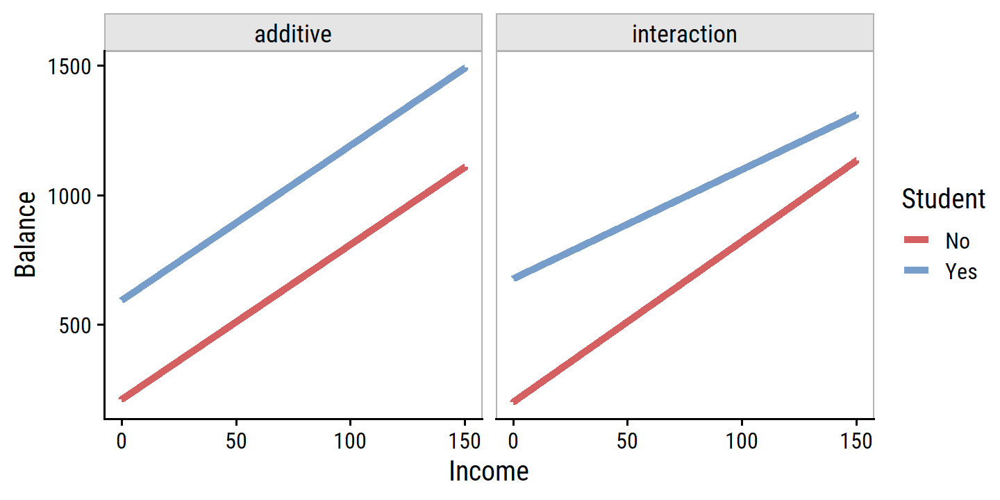
This suggests that the positive relationship between Income and Balance is smaller for students.
Non-linear Relationships
This assumption is that there is a linear relationship between response and predictors, but in some cases, the true relationship may be non-linear. A simple way to account for non-linearity is to use polynomial regression.
Fit mpg to horsepower as a linear term, quadratic term, and up to the fifth degree:
auto <- ISLR2::Auto
lm_mpg_hp <- lm(mpg ~ horsepower, data = auto)
lm_mpg_hp2 <- lm(mpg ~ horsepower + I(horsepower^2), data = auto)
lm_mpg_hp5 <-
lm(
mpg ~ horsepower + I(horsepower^2) + I(horsepower^3) +
I(horsepower^4) + I(horsepower^5),
data = auto
)
d <- tibble(horsepower = seq(1, 250, 0.1))
bind_rows(
augment(lm_mpg_hp, newdata = d) %>% mutate(model = "Linear"),
augment(lm_mpg_hp2, newdata = d) %>% mutate(model = "Degree 2"),
augment(lm_mpg_hp5, newdata = d) %>% mutate(model = "Degree 5")
) %>%
ggplot(aes(x = horsepower, y = .fitted, color = model)) +
geom_point(
aes(y = mpg), data = auto, color = "darkgrey", shape = 21, size = 3
) +
geom_line(size = 1.5) +
coord_cartesian(xlim = c(40, 230), ylim = c(8, 52)) +
add_facet_borders() +
theme(legend.position = c(0.7, 0.8)) +
labs(y = "mpg", color = NULL)And compare model assessment statistics:
glance(lm_mpg_hp) %>% mutate(model = "Linear") %>%
bind_rows(
glance(lm_mpg_hp2) %>% mutate(model = "Degree 2")
) %>%
bind_rows(
glance(lm_mpg_hp5) %>% mutate(model = "Degree 5")
) %>%
select(model, r.squared, AIC, BIC) %>%
mutate(across(-model, round, 3)) %>%
gt()| model | r.squared | AIC | BIC |
|---|---|---|---|
| Linear | 0.606 | 2363.324 | 2375.237 |
| Degree 2 | 0.688 | 2274.354 | 2290.239 |
| Degree 5 | 0.697 | 2268.663 | 2296.462 |
3.3.3 Potential Problems
1. Non-linearity of the Data
If the true relationship between response and predictors is far from linear, then we can should be able to see this in residual plots.
In R, we can call the generic plot() function on the model objects to quickly get these plots:
plot(lm_mpg_hp, 1)plot(lm_mpg_hp2, 1)Ideally these residual plots will show no discernible pattern. Above, there is a clear U-shape in the linear model indicating non-linearity in the data. This appears to be improved by the quadratic term.
2. Correlation of Error Terms
An important assumption of the linear regression model is that the error terms, \(\epsilon\), are uncorrelated. What does this mean? For instance, if the errors are uncorrelated, then the fact that \(\epsilon_i\) is positive provides little or no information about the sign of \(\epsilon_{i+1}\). The standard errors that are computed for the estimated regression coefficients or the fitted values are based on the assumption of uncorrelated error terms. If in fact there is correlation among the error terms, then the estimated standard errors will tend to underestimate the true standard errors. As a result, confidence and prediction intervals will be narrower than they should be. For example, a 95% confidence interval may in reality have a much lower probability than 0.95 of containing the true value of the parameter. In addition, p-values associated with the model will be lower than they should be; this could cause us to erroneously conclude that a parameter is statistically significant. In short, if the error terms are correlated, we may have an unwarranted sense of confidence in our model.
The extreme example in the text is an accidental doubling of the data, which we can try out with the advertising multiple regression model:
lm_sales_mult_double <- lm(sales ~ TV + radio + newspaper,
data = bind_rows(advertising, advertising))
bind_rows(
bind_cols(data = "original", tidy_custom(lm_sales_mult)),
bind_cols(data = "double", tidy_custom(lm_sales_mult_double))
) %>%
group_by(data) %>%
gt()| term | coefficient | std.error | t-statistic | p-value |
|---|---|---|---|---|
| original | ||||
| (Intercept) | 2.939 | 0.3119 | 9.42 | <0.001 |
| TV | 0.046 | 0.0014 | 32.81 | <0.001 |
| radio | 0.189 | 0.0086 | 21.89 | <0.001 |
| newspaper | -0.001 | 0.0059 | -0.18 | 0.860 |
| double | ||||
| (Intercept) | 2.939 | 0.2194 | 13.39 | <0.001 |
| TV | 0.046 | 0.0010 | 46.63 | <0.001 |
| radio | 0.189 | 0.0061 | 31.12 | <0.001 |
| newspaper | -0.001 | 0.0041 | -0.25 | 0.802 |
3. Non-constant Variance of Error Terms
Another important assumption is that the error terms have constant variance, \(\text{Var}(\epsilon_i) = \sigma^2\). If they do not, we say there is heteroscedasticity, which we can see in the residual plot as a funnel shape. For example:
d <- tibble(
x = rnorm(300, mean = 20, sd = 5)
) %>%
rowwise() %>%
mutate(
y = x * rnorm(1, mean = 1, sd = x / 20)
)
plot(lm(y ~ x, data = d), 1)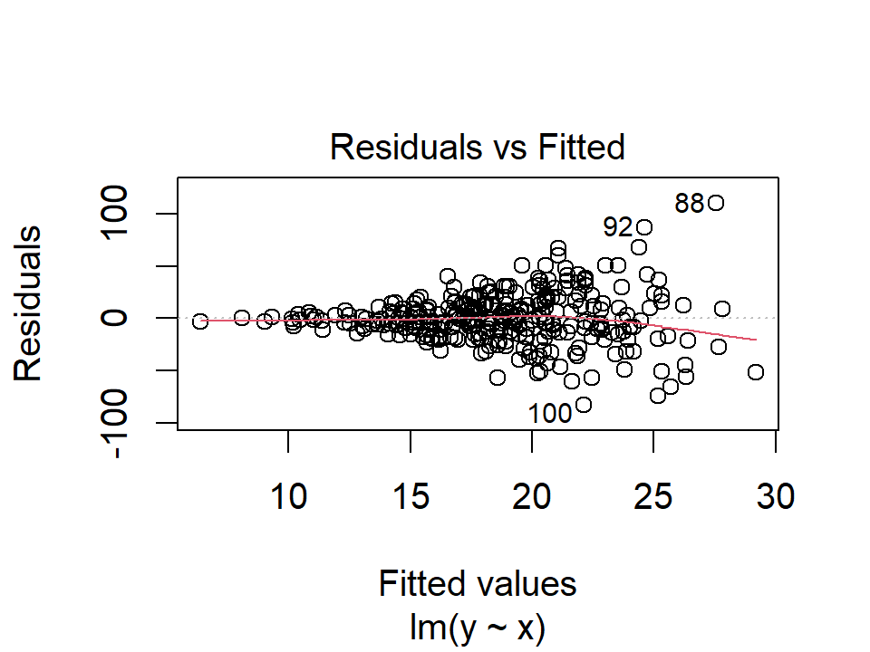
4. Outliers
An outlier is a point for which \(y_i\) is far from the value predicted by the model. Outliers can arise for a variety of reasons, such as incorrect recording of an observation during data collection.
We can typically see outliers in the residuals plots:
plot(lm_mpg_hp, 1)
In this case, point numbers 334, 323, and 330 were identified as outliers. It is hard to say when a residual is a problem that should be addressed. We can also plot the studentized (or standardized) residuals, which are computed by dividing each residual by its estimated standard error:
plot(lm_mpg_hp, 5)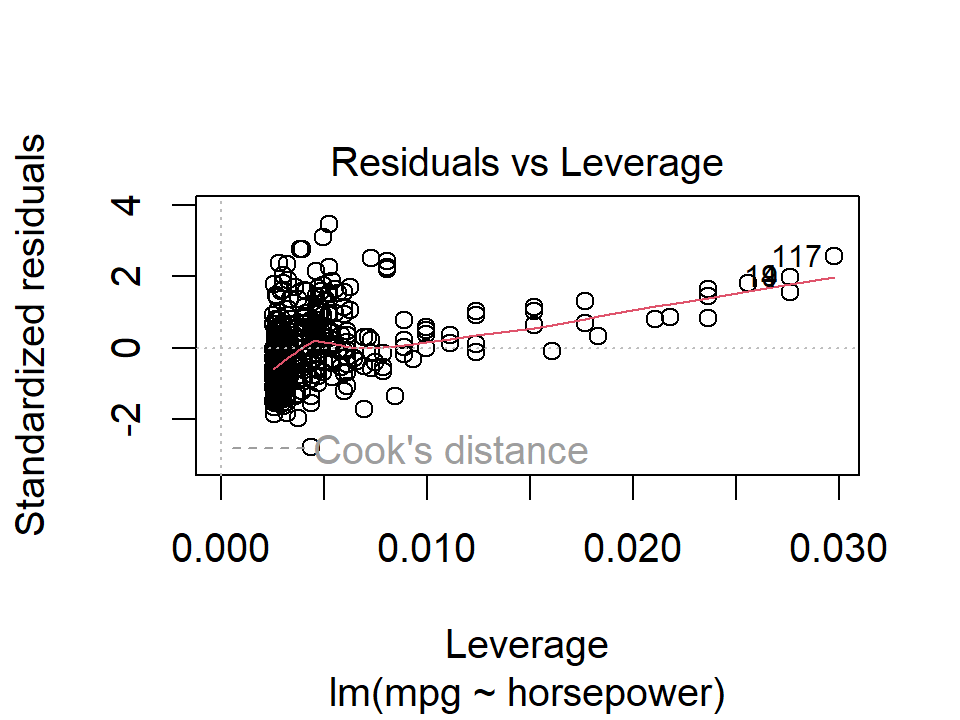
Here we see a few outliers with standardized residuals above 2.
5. High Leverage Points
Outliers are unusual response values \(y_i\), while observations with high leverage have unusual values for \(x_i\). In the above plot, the points 117 and 94 were identified as high leverage, as well as having fairly high residuals. These data would be worth investigating further.
6. Collinearity
Collinearity refers to the situation in which two or more predictor variables are closely related to one another.
In the credit data, we see collinearity between the limit and rating variables:
credit %>%
select(Limit, Age, Rating) %>%
pivot_longer(cols = c(Age, Rating)) %>%
ggplot(aes(x = Limit, y = value)) +
geom_point() +
facet_wrap(~name, nrow = 1, scales = "free_y")The presence of collinearity can pose problems in the regression context, since it can be difficult to separate out the individual effects of collinear variables on the response. In other words, since
limitandratingtend to increase or decrease together, it can be difficult to determine how each one separately is associated with the response,balance.
Since collinearity reduces the accuracy of the estimates of the regression coefficients, it causes the standard error for \(\hat{\beta}_j\) to grow. Recall that the \(t\)-statistic for each predictor is calculated by dividing \(\hat{\beta}_j\) by its standard error. Consequently, collinearity results in a decline in the \(t\)-statistic. As a result, in the presence of collinearity, we may fail to reject \(H_0: \beta_j = 0\). This means that the power of the hypothesis test – the probability of correctly detecting a non-zero coefficient – is reduced by collinearity.
Fit the two models and summarize in a table:
lm_balance_age_limit <- lm(Balance ~ Age + Limit, data = credit)
lm_balance_rating_limit <- lm(Balance ~ Rating + Limit, data = credit)
bind_rows(
bind_cols(mod = "Model 1", tidy_custom(lm_balance_age_limit)),
bind_cols(mod = "Model 2", tidy_custom(lm_balance_rating_limit))
) %>%
group_by(mod) %>%
gt(rowname_col = "term")| coefficient | std.error | t-statistic | p-value | |
|---|---|---|---|---|
| Model 1 | ||||
| (Intercept) | -173.411 | 43.8284 | -3.96 | <0.001 |
| Age | -2.291 | 0.6725 | -3.41 | <0.001 |
| Limit | 0.173 | 0.0050 | 34.50 | <0.001 |
| Model 2 | ||||
| (Intercept) | -377.537 | 45.2542 | -8.34 | <0.001 |
| Rating | 2.202 | 0.9523 | 2.31 | 0.021 |
| Limit | 0.025 | 0.0638 | 0.38 | 0.701 |
A simple way to detect collinearity is to look at the correlation matrix of predictors. However, when there is multicollinearity (more than 2 variables correlated), we won’t see anything wrong in the pairwise correlation matrix. A better way is to compute the variance inflation factor (VIF). The VIF of a parameter if the ratio of \(\text{Var}(\hat{\beta}_j)\) when fitting the full model divided by the variance when fit on its own. VIF values which exceed 5 or 10 indicate a problematic amount of collinearity. It can be computed using the formula:
\[ \text{VIF}(\hat{\beta}_j) = \frac{1}{1 - R^2_{X_j | X_-j}} \] where \(R^2_{X_j | X_-j}\) is the \(R^2\) from a regression of \(X_j\) onto all other predictors.
Compute it manually with the predictor rating regressed on age and limit:
rating_r2 <-
summary(
lm(Rating ~ Age + Limit, data = credit)
)$r.squared
round(1 / (1 - rating_r2), 2)## [1] 160.67To calculate VIFs, there are R functions such as car::vif which can be used, but it is fairly simple to calculate by hand:
lm_rating_age_limit <- lm(Rating ~ Age + Limit, data = credit)
lm_age_rating_limit <- lm(Age ~ Rating + Limit, data = credit)
lm_limit_age_rating <- lm(Limit ~ Age + Rating, data = credit)
tribble(
~Predictor, ~`R^2`,
"Age", 1 / (1 - summary(lm_age_rating_limit)$r.squared),
"Rating", 1 / (1 - summary(lm_rating_age_limit)$r.squared),
"Limit", 1 / (1 - summary(lm_limit_age_rating)$r.squared)
) %>%
mutate(`R^2` = round(`R^2`, 2)) %>%
gt()| Predictor | R^2 |
|---|---|
| Age | 1.01 |
| Rating | 160.67 |
| Limit | 160.59 |
When dealing with high collinearity, such as with rating and limit here, the first solution is to drop one of the variables from the regression.
This should be okay because the dropped variable is likely redundant.
Another solution would be to combine the collinear variables together into a single predictor, e.g. taking the average of standardized limit and rating.
3.4 The Marketing Plan
- Is there a relationship between sales and advertising budget:
From the multiple regression \(F\)-test (Table 3.6), \(F =\) 570.27 (\(p\) <0.001). There is clear evidence of a relationship.
- How strong is the relationship?
Calculate the RSE from the model:
# Manually calculated RSE
sqrt(
sum(resid(lm_sales_mult)^2) /
# Degrees of freedom: n - p - 1
(nrow(advertising) - 3 - 1)
)## [1] 1.68551# The helper functon RSE is easier
sigma(lm_sales_mult)## [1] 1.68551On the scale of the response, with a mean (SD) of 14 (5.2), the RSE indicates a percentage error of about:
(sigma(lm_sales_mult) / mean(advertising$sales)) %>%
scales::percent()## [1] "12%"The \(R^2\) value is 0.8972106, indicating approximately 90% of the variance in sales is explained by the three predictors.
- Which media are associated with sales?
Though a simplified view of association, we say that TV and radio are significantly associated with sales due to their low \(p\)-values, and that newspaper is not.
- How large is the association between each medium and sales?
Compute 95% confidence intervals from SEs for each predictor:
tidy(lm_sales_mult, conf.int = 0.95) %>%
transmute(
term, across(c(estimate, conf.low, conf.high), round, 3)
) %>%
gt()| term | estimate | conf.low | conf.high |
|---|---|---|---|
| (Intercept) | 2.939 | 2.324 | 3.554 |
| TV | 0.046 | 0.043 | 0.049 |
| radio | 0.189 | 0.172 | 0.206 |
| newspaper | -0.001 | -0.013 | 0.011 |
TV and radio CIs are both narrow and don’t include zero.
The interval for newspaper does include zero.
Look for collinearity:
car::vif(lm_sales_mult)## TV radio newspaper
## 1.004611 1.144952 1.145187No evidence from VIF scores.
- How accurately can we predict future sales?
We can either predict an individual response, \(Y = f(X) + \epsilon\) with a prediction interval, or the average response \(f(X)\) with a confidence interval.
This is done with the predict.lm() function and by setting the argument interval:
# Make up some new data to predict sales
d <- tibble(TV = 160.0, radio = 15.0, newspaper = 72.0)
predict(
lm_sales_mult, newdata = d,
interval = "prediction", level = 0.95
)## fit lwr upr
## 1 13.01448 9.637749 16.39122predict(
lm_sales_mult, newdata = d,
interval = "confidence", level = 0.95
)## fit lwr upr
## 1 13.01448 12.4204 13.60857As expected, the former is wider than the latter due to incorporating the irreducible error.
- Is the relationship linear?
The residual plot:
plot(lm_sales_mult, 1)
The shape of these residuals suggests a non-linear relationship.
- Is there synergy among the advertising media?
To account for the non-linearity, we included an interaction term between TV and radio.
The \(p\)-value of the interaction term:
tidy_custom(lm_sales_inter) %>%
gt()| term | coefficient | std.error | t-statistic | p-value |
|---|---|---|---|---|
| (Intercept) | 6.750 | 0.2479 | 27.23 | <0.001 |
| radio | 0.029 | 0.0089 | 3.24 | 0.001 |
| TV | 0.019 | 0.0015 | 12.70 | <0.001 |
| radio:TV | 0.001 | 0.0001 | 20.73 | <0.001 |
and the increase in \(R^2\):
summary(lm_sales_radio_tv)$r.squared## [1] 0.8971943summary(lm_sales_inter)$r.squared## [1] 0.9677905suggests a substantial improvement over the additive model.
3.5 Comparison of Linear Regression with \(K\)-Nearest Neighbors
Parametric methods are often easy to fit, and easy to interpret, but the disadvantage is the strong assumption about the form of \(f(X)\).
Non-parametric methods do not explicitly assume a form for \(f(X)\) and therefore provide an alternative and more flexible approach to regression. One of the simplest and best-known methods is \(K\)-nearest neighbors regression (closely related to the KNN classifier from Chapter 2).
From the \(K\) nearest neighbors (represented by the set \(\mathcal{N}_0\)) to a prediction point \(x_0\), it estimates \(f(x_0)\) using the average:
\[ \hat{f}(x_0) = \frac{1}{K} \sum_{x_i \in \mathcal{N}_0} y_i. \]
On the choice of \(K\):
In general, the optimal value for \(K\) will depend on the bias-variance tradeoff, which we introduced in Chapter 2. A small value for \(K\) provides the most flexible fit, which will have low bias but high variance. This variance is due to the fact that the prediction in a given region is entirely dependent on just one observation. In contrast, larger values of \(K\) provide a smoother and less variable fit; the prediction in a region is an average of several points, and so changing one observation has a smaller effect. However, the smoothing may cause bias by masking some of the structure in \(f(X)\). In Chapter 5, we introduce several approaches for estimating test error rates. These methods can be used to identify the optimal value of \(K\) in KNN regression.
In what setting will a parametric approach such as least squares linear regression outperform a non-parametric approach such as KNN regression? The answer is simple: the parametric approach will outperform the non-parametric approach if the parametric form that has been selected is close to the true form of \(f\).
There is another consideration when performing KNN with many predictors \(p\):
However, spreading 50 observations over \(p\) = 20 dimensions results in a phenomenon in which a given observation has no nearby neighbors —- this is the so-called curse of dimensionality. That is, the \(K\) observations that are nearest to a given test observation \(x_0\) may be very far away from \(x_0\) in \(p\)-dimensional space when \(p\) is large, leading to a very poor prediction of \(f(x_0)\) and hence a poor KNN fit. As a general rule, parametric methods will tend to outperform non-parametric approaches when there is a small number of observations per predictor.
However:
Even when the dimension is small, we might prefer linear regression to KNN from an interpretability standpoint. If the test MSE of KNN is only slightly lower than that of linear regression, we might be willing to forego a little bit of prediction accuracy for the sake of a simple model that can be described in terms of just a few coefficients, and for which \(p\)-values are available.
3.6 Lab: Linear Regression
3.6.1 Libraries
Load the boston data rather than the full ISLR2 package:
boston <- ISLR2::Boston3.6.2 Simple Linear Regression
Regress median value of owner-occupied homes medv on percentage of houses with lower socioeconomic status lstat:
lm_medv_lstat <- lm(medv ~ lstat, data = boston)
summary(lm_medv_lstat)##
## Call:
## lm(formula = medv ~ lstat, data = boston)
##
## Residuals:
## Min 1Q Median 3Q Max
## -15.168 -3.990 -1.318 2.034 24.500
##
## Coefficients:
## Estimate Std. Error t value Pr(>|t|)
## (Intercept) 34.55384 0.56263 61.41 <2e-16 ***
## lstat -0.95005 0.03873 -24.53 <2e-16 ***
## ---
## Signif. codes: 0 '***' 0.001 '**' 0.01 '*' 0.05 '.' 0.1 ' ' 1
##
## Residual standard error: 6.216 on 504 degrees of freedom
## Multiple R-squared: 0.5441, Adjusted R-squared: 0.5432
## F-statistic: 601.6 on 1 and 504 DF, p-value: < 2.2e-16Compute confidence and prediction intervals at different values of lstat:
nd <- tibble(lstat = c(5, 10, 15))
bind_cols(
nd,
as_tibble(predict(lm_medv_lstat, nd, interval = "confidence"))
)## # A tibble: 3 x 4
## lstat fit lwr upr
## <dbl> <dbl> <dbl> <dbl>
## 1 5 29.8 29.0 30.6
## 2 10 25.1 24.5 25.6
## 3 15 20.3 19.7 20.9bind_cols(
nd,
as_tibble(predict(lm_medv_lstat, nd, interval = "prediction"))
)## # A tibble: 3 x 4
## lstat fit lwr upr
## <dbl> <dbl> <dbl> <dbl>
## 1 5 29.8 17.6 42.0
## 2 10 25.1 12.8 37.3
## 3 15 20.3 8.08 32.5The broom::augment function is a more convenient method:
broom::augment(
lm_medv_lstat, newdata = nd, interval = "confidence"
)## # A tibble: 3 x 4
## lstat .fitted .lower .upper
## <dbl> <dbl> <dbl> <dbl>
## 1 5 29.8 29.0 30.6
## 2 10 25.1 24.5 25.6
## 3 15 20.3 19.7 20.9Plot the relationship between medv and lstat:
boston %>%
ggplot(aes(x = lstat, y = medv)) +
geom_point(alpha = 0.3) +
geom_abline(slope = coef(lm_medv_lstat)["lstat"],
intercept = coef(lm_medv_lstat)["(Intercept)"],
size = 1.0, color = td_colors$nice$day9_yellow)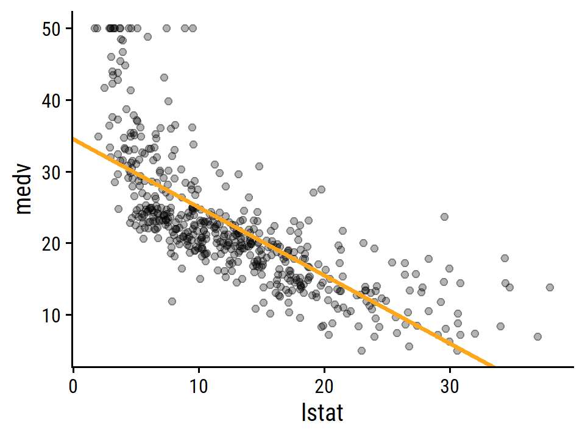
To display model diagnostics, we can call plot() on the model object as we have before, but I like the performance package because it uses ggplot2:
performance::check_model(lm_medv_lstat)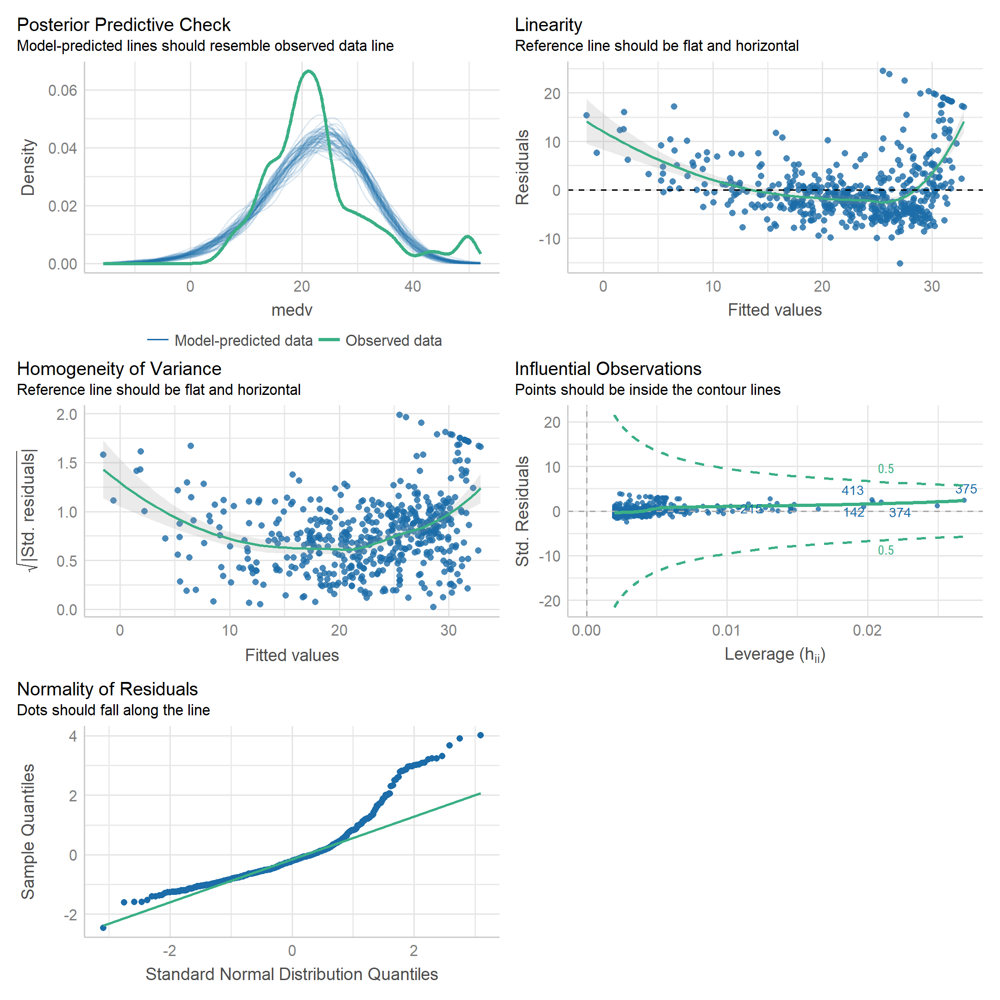
The stats::hatvalues() function is a new one to me, for computing leverage:
hatvalues(lm_medv_lstat)[which.max(hatvalues(lm_medv_lstat))]## 375
## 0.02686517Unsurprisingly, this point is the one with the largest value of lstat:
boston %>%
transmute(row = 1:n(), lstat, medv) %>%
filter(lstat == max(lstat))## row lstat medv
## 1 375 37.97 13.83.6.3 Multiple Linear Regression
Fit to all predictors and check VIF with the performance package:
lm_medv_all <- lm(medv ~ ., data = boston)
performance::check_collinearity(lm_medv_all)## # Check for Multicollinearity
##
## Low Correlation
##
## Term VIF Increased SE Tolerance
## crim 1.77 1.33 0.57
## zn 2.30 1.52 0.44
## indus 3.99 2.00 0.25
## chas 1.07 1.03 0.93
## nox 4.37 2.09 0.23
## rm 1.91 1.38 0.52
## age 3.09 1.76 0.32
## dis 3.95 1.99 0.25
## ptratio 1.80 1.34 0.56
## lstat 2.87 1.69 0.35
##
## Moderate Correlation
##
## Term VIF Increased SE Tolerance
## rad 7.45 2.73 0.13
## tax 9.00 3.00 0.11The rad (accessibility to radial highways) and tax (property tax rate) variables have moderate VIF.
3.6.4 Interaction Terms
Interaction between lstat and age:
lm_medv_lstat_age <- lm(medv ~ lstat * age, data = boston)
tidy_custom(lm_medv_lstat_age) %>%
gt()| term | coefficient | std.error | t-statistic | p-value |
|---|---|---|---|---|
| (Intercept) | 36.089 | 1.4698 | 24.55 | <0.001 |
| lstat | -1.392 | 0.1675 | -8.31 | <0.001 |
| age | -0.001 | 0.0199 | -0.04 | 0.971 |
| lstat:age | 0.004 | 0.0019 | 2.24 | 0.025 |
3.6.5 Non-linear Transformations of the Predictors
Perform a regression of medv onto lstat and lstat^2, and compare fits with anova:
lm_medv_lstat2 <- lm(medv ~ lstat + I(lstat^2), data = boston)
anova(lm_medv_lstat, lm_medv_lstat2)## Analysis of Variance Table
##
## Model 1: medv ~ lstat
## Model 2: medv ~ lstat + I(lstat^2)
## Res.Df RSS Df Sum of Sq F Pr(>F)
## 1 504 19472
## 2 503 15347 1 4125.1 135.2 < 2.2e-16 ***
## ---
## Signif. codes: 0 '***' 0.001 '**' 0.01 '*' 0.05 '.' 0.1 ' ' 1The quadratic model is superior by the \(F\)-test. Check the residuals:
performance::check_model(lm_medv_lstat2, check = "linearity")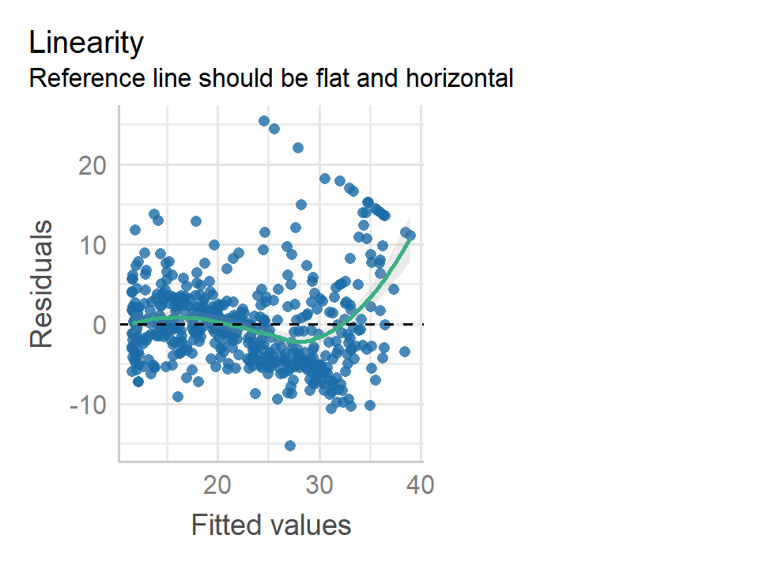
The quadratic term is an obvious improvement, but still some non-linearity at large values of medv.
The poly() function is a quick way to include higher order terms:
# Orthogonalized predictors by default
lm_medv_lstat5 <- lm(medv ~ poly(lstat, 5), data = boston)
tidy_custom(lm_medv_lstat5)## # A tibble: 6 x 5
## term coefficient std.error `t-statistic` `p-value`
## <chr> <dbl> <dbl> <dbl> <chr>
## 1 (Intercept) 22.5 0.232 97.2 <0.001
## 2 poly(lstat, 5)1 -152. 5.21 -29.2 <0.001
## 3 poly(lstat, 5)2 64.2 5.21 12.3 <0.001
## 4 poly(lstat, 5)3 -27.1 5.21 -5.19 <0.001
## 5 poly(lstat, 5)4 25.5 5.21 4.88 <0.001
## 6 poly(lstat, 5)5 -19.3 5.21 -3.69 <0.001# Raw polynomials
lm_medv_lstat5_raw <- lm(medv ~ poly(lstat, 5, raw = TRUE), data = boston)
tidy_custom(lm_medv_lstat5_raw)## # A tibble: 6 x 5
## term coefficient std.error `t-statistic` `p-value`
## <chr> <dbl> <dbl> <dbl> <chr>
## 1 (Intercept) 67.7 3.60 18.8 <0.001
## 2 poly(lstat, 5, raw = TRUE)1 -12.0 1.53 -7.86 <0.001
## 3 poly(lstat, 5, raw = TRUE)2 1.27 0.223 5.7 <0.001
## 4 poly(lstat, 5, raw = TRUE)3 -0.068 0.0144 -4.75 <0.001
## 5 poly(lstat, 5, raw = TRUE)4 0.002 0.0004 4.14 <0.001
## 6 poly(lstat, 5, raw = TRUE)5 0 0 -3.69 <0.0013.6.6 Qualitative Predictors
Load carseats:
carseats <- ISLR2::CarseatsThe contrasts() function shows the dummy coding for the qualitative ShelveLoc variable:
contrasts(carseats$ShelveLoc)## Good Medium
## Bad 0 0
## Good 1 0
## Medium 0 1Fit the model and print the coefficients related to ShelveLoc:
lm_sales <- lm(Sales ~ . + Income:Advertising + Price:Age,
data = carseats)
tidy_custom(lm_sales) %>%
filter(str_detect(term, "ShelveLoc|Intercept"))## # A tibble: 3 x 5
## term coefficient std.error `t-statistic` `p-value`
## <chr> <dbl> <dbl> <dbl> <chr>
## 1 (Intercept) 6.58 1.01 6.52 <0.001
## 2 ShelveLocGood 4.85 0.153 31.7 <0.001
## 3 ShelveLocMedium 1.95 0.126 15.5 <0.0013.7 Exercises
Applied
I’ll attempt to do these exercises in the tidymodels framework.
library(tidymodels)8. Simple linear regression with Auto
This is way overkill for a simple linear regression, but here is a tidymodels workflow object for regressing mpg on horsepower:
lm_mpg_hp_recipe <- recipe(mpg ~ horsepower, data = auto)
lm_mpg_hp_spec <- linear_reg() %>%
set_mode("regression") %>%
set_engine("lm")
lm_mpg_hp_workflow <- workflow() %>%
add_recipe(lm_mpg_hp_recipe) %>%
add_model(lm_mpg_hp_spec)
lm_mpg_hp_workflow## == Workflow ====================================================================
## Preprocessor: Recipe
## Model: linear_reg()
##
## -- Preprocessor ----------------------------------------------------------------
## 0 Recipe Steps
##
## -- Model -----------------------------------------------------------------------
## Linear Regression Model Specification (regression)
##
## Computational engine: lmFit the model and print the estimates:
lm_mpg_hp_fit <- lm_mpg_hp_workflow %>%
fit(data = auto)
tidy_custom(lm_mpg_hp_fit) %>%
gt()| term | coefficient | std.error | t-statistic | p-value |
|---|---|---|---|---|
| (Intercept) | 39.936 | 0.7175 | 55.66 | <0.001 |
| horsepower | -0.158 | 0.0064 | -24.49 | <0.001 |
The tidymodels framework uses the same functions as we have seen (the “engine†specifies the lm function), but in principled fashion with a standardized interface.
We can extract the actual lm object from lm_mpg_hp_fit using extract_fit_engine()
lm_mpg_hp_fit_engine <- lm_mpg_hp_fit %>%
extract_fit_engine()
summary(lm_mpg_hp_fit_engine)##
## Call:
## stats::lm(formula = ..y ~ ., data = data)
##
## Residuals:
## Min 1Q Median 3Q Max
## -13.5710 -3.2592 -0.3435 2.7630 16.9240
##
## Coefficients:
## Estimate Std. Error t value Pr(>|t|)
## (Intercept) 39.935861 0.717499 55.66 <2e-16 ***
## horsepower -0.157845 0.006446 -24.49 <2e-16 ***
## ---
## Signif. codes: 0 '***' 0.001 '**' 0.01 '*' 0.05 '.' 0.1 ' ' 1
##
## Residual standard error: 4.906 on 390 degrees of freedom
## Multiple R-squared: 0.6059, Adjusted R-squared: 0.6049
## F-statistic: 599.7 on 1 and 390 DF, p-value: < 2.2e-16- Observations on the model:
- There is a relationship between
mpgandhorsepower. - Is is highly significant (\(p\) <0.001) with \(R^2\) = 0.61
- The relationship is negative. Every unit of horsepower is associated with a -0.16 reduction in miles per gallon.
- The confidence and prediction intervals of predicted
mpggivenhorsepower= 98:
predict(lm_mpg_hp_fit, tibble(horsepower = 98), type = "conf_int",
# Don't have to call this, because it is the default value
level = 0.95)## # A tibble: 1 x 2
## .pred_lower .pred_upper
## <dbl> <dbl>
## 1 24.0 25.0predict(lm_mpg_hp_fit, tibble(horsepower = 98), type = "pred_int")## # A tibble: 1 x 2
## .pred_lower .pred_upper
## <dbl> <dbl>
## 1 14.8 34.1Note that the lm_mpg_hp_fit is a workflow object, and so the parsnip::predict.model_fit() function takes a different argument (type) to specify confidence/prediction intervals.
Before, we were calling predict.lm() which uses the interval argument.
Note that it also doesn’t return the point estimate, just the lower and upper values.
- Plot with best fit line:
auto %>%
ggplot(aes(x = horsepower)) +
geom_point(aes(y = mpg), size = 2, alpha = 0.4) +
geom_abline(slope = coef(lm_mpg_hp_fit_engine)["horsepower"],
intercept = coef(lm_mpg_hp_fit_engine)["(Intercept)"],
size = 2, color = td_colors$nice$emerald)- Diagnostic plots:
lm_mpg_hp_fit_engine %>%
performance::check_model()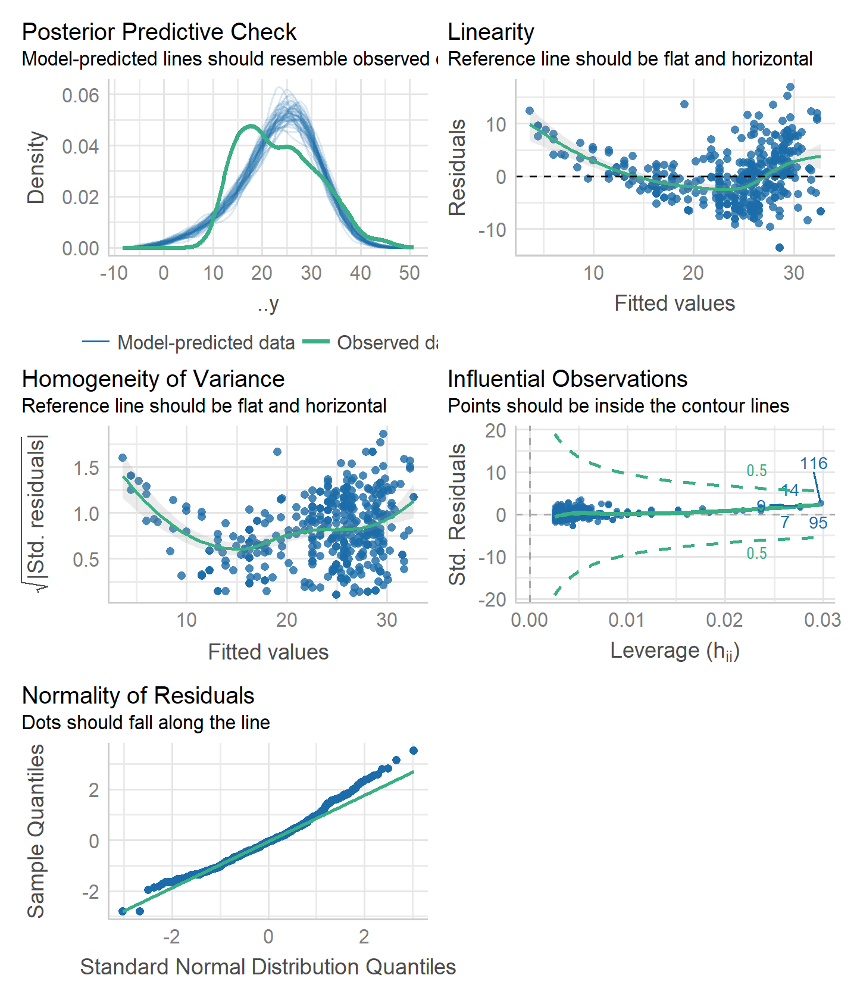
Two potential problems: non-linearity (top left plot) and homogeneity of variance (top right).
9. Multiple linear regression with Auto
- Scatterplot of all variables.
For quickly producing these correlation matrices, I like the GGally::ggpairs() function:
GGally::ggpairs(auto %>% select(-name))## Registered S3 method overwritten by 'GGally':
## method from
## +.gg ggplot2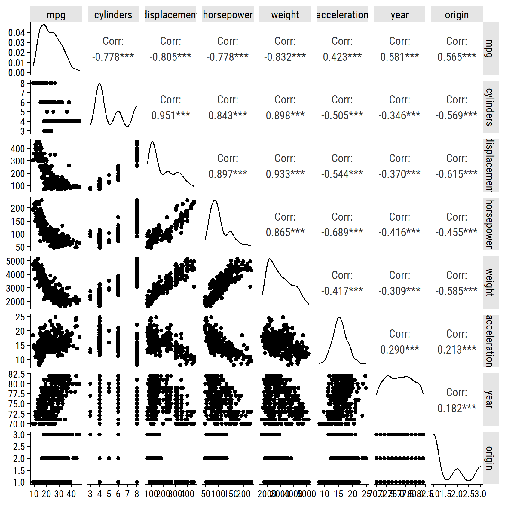
- Compute the correlations.
The above plot shows the correlation coefficients, but here is the cor() output:
cor(auto %>% select(-name))## mpg cylinders displacement horsepower weight
## mpg 1.0000000 -0.7776175 -0.8051269 -0.7784268 -0.8322442
## cylinders -0.7776175 1.0000000 0.9508233 0.8429834 0.8975273
## displacement -0.8051269 0.9508233 1.0000000 0.8972570 0.9329944
## horsepower -0.7784268 0.8429834 0.8972570 1.0000000 0.8645377
## weight -0.8322442 0.8975273 0.9329944 0.8645377 1.0000000
## acceleration 0.4233285 -0.5046834 -0.5438005 -0.6891955 -0.4168392
## year 0.5805410 -0.3456474 -0.3698552 -0.4163615 -0.3091199
## origin 0.5652088 -0.5689316 -0.6145351 -0.4551715 -0.5850054
## acceleration year origin
## mpg 0.4233285 0.5805410 0.5652088
## cylinders -0.5046834 -0.3456474 -0.5689316
## displacement -0.5438005 -0.3698552 -0.6145351
## horsepower -0.6891955 -0.4163615 -0.4551715
## weight -0.4168392 -0.3091199 -0.5850054
## acceleration 1.0000000 0.2903161 0.2127458
## year 0.2903161 1.0000000 0.1815277
## origin 0.2127458 0.1815277 1.0000000- Fit the multiple linear regression.
lm_mpg_recipe <- recipe(mpg ~ ., data = auto) %>%
step_rm(name)
# Skip the spec step, and just put it directly into the workflow
lm_mpg_workflow <- workflow() %>%
add_recipe(lm_mpg_recipe) %>%
# By default, linear_reg() will use lm as the engine and regression as mode
add_model(linear_reg())
lm_mpg_workflow## == Workflow ====================================================================
## Preprocessor: Recipe
## Model: linear_reg()
##
## -- Preprocessor ----------------------------------------------------------------
## 1 Recipe Step
##
## * step_rm()
##
## -- Model -----------------------------------------------------------------------
## Linear Regression Model Specification (regression)
##
## Computational engine: lmlm_mpg_fit <- lm_mpg_workflow %>%
fit(data = auto)
lm_mpg_fit_engine <- extract_fit_engine(lm_mpg_fit)
summary(lm_mpg_fit_engine)##
## Call:
## stats::lm(formula = ..y ~ ., data = data)
##
## Residuals:
## Min 1Q Median 3Q Max
## -9.5903 -2.1565 -0.1169 1.8690 13.0604
##
## Coefficients:
## Estimate Std. Error t value Pr(>|t|)
## (Intercept) -17.218435 4.644294 -3.707 0.00024 ***
## cylinders -0.493376 0.323282 -1.526 0.12780
## displacement 0.019896 0.007515 2.647 0.00844 **
## horsepower -0.016951 0.013787 -1.230 0.21963
## weight -0.006474 0.000652 -9.929 < 2e-16 ***
## acceleration 0.080576 0.098845 0.815 0.41548
## year 0.750773 0.050973 14.729 < 2e-16 ***
## origin 1.426141 0.278136 5.127 4.67e-07 ***
## ---
## Signif. codes: 0 '***' 0.001 '**' 0.01 '*' 0.05 '.' 0.1 ' ' 1
##
## Residual standard error: 3.328 on 384 degrees of freedom
## Multiple R-squared: 0.8215, Adjusted R-squared: 0.8182
## F-statistic: 252.4 on 7 and 384 DF, p-value: < 2.2e-16- There is a relationship between the predictors and
mpg: \(F\) = 252.4 - The following terms are statistically significant: (Intercept), displacement, weight, year, origin
- The coefficient for
yearsuggests that, for every increment in car model year,mpgincreases by 0.75
- Diagnostic plots.
lm_mpg_fit %>%
extract_fit_engine() %>%
performance::check_model()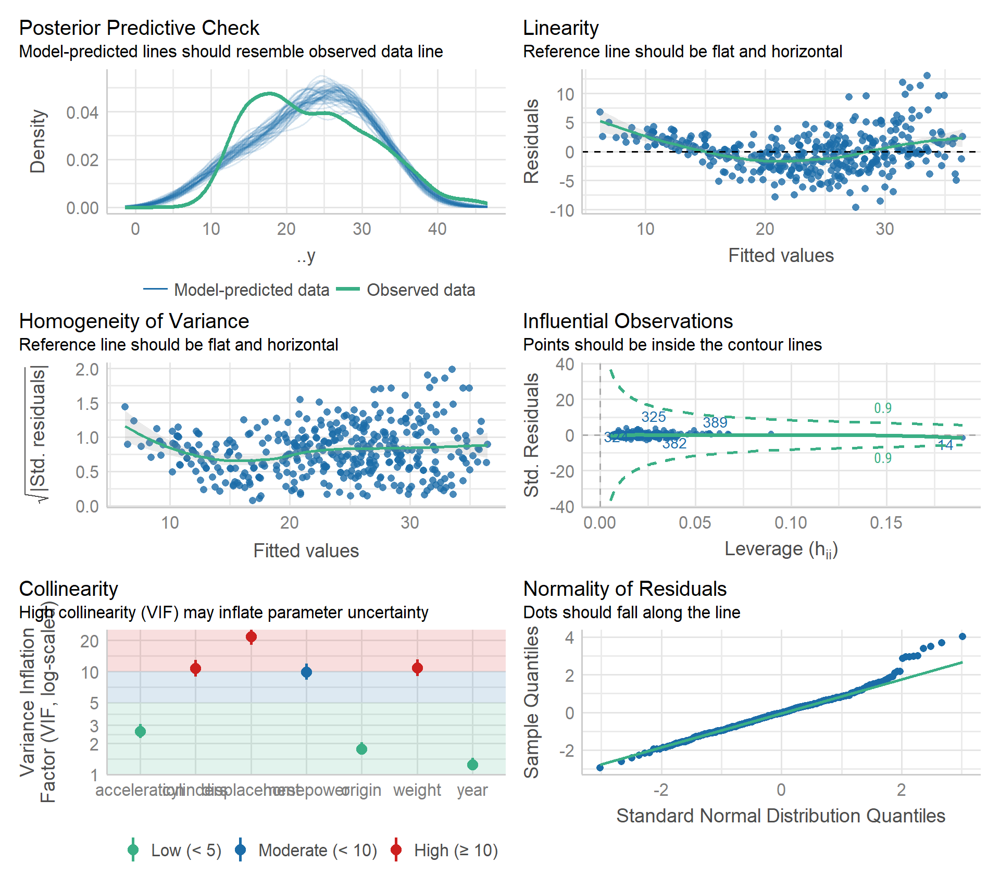
Some non-linearity and moderate collinearity. There is a point with high leverage, but it has a fairly small standardized residual.
10. Multiple linear regression with Carseats
- Fit a model to predict
SalesusingPrice,Urban, andUS.
For demonstration, here I’ll use the minimal code possible while still using tidymodels (i.e. skip recipe and workflow steps):
lm_sales_price_urban_us_fit <-
linear_reg() %>% # default engine = "lm"
fit(Sales ~ Price + Urban + US, data = carseats)
fit_tidy <- tidy(lm_sales_price_urban_us_fit)
tidy_custom(lm_sales_price_urban_us_fit) %>%
gt()| term | coefficient | std.error | t-statistic | p-value |
|---|---|---|---|---|
| (Intercept) | 13.043 | 0.6510 | 20.04 | <0.001 |
| Price | -0.054 | 0.0052 | -10.39 | <0.001 |
| UrbanYes | -0.022 | 0.2717 | -0.08 | 0.936 |
| USYes | 1.201 | 0.2590 | 4.63 | <0.001 |
- Provide an interpretation of each coefficient.
- There is a significant negative relationship between
SalesandPrice:- A difference of -0.054 thousand unit sales per dollar of price
- There is no significant association between
UrbanandSales:- Urban stores sell -0.022 thousand units compared to non-urban
- There is a significant difference between US and non-US stores.
- US stores sell 1.2 thousand more units on average compared to non-US
- Write out the model formula.
There is a nice package called equatiomatic for writing out model formulae:
lm_sales_price_urban_us_fit %>%
extract_fit_engine() %>%
equatiomatic::extract_eq()\[ \operatorname{Sales} = \alpha + \beta_{1}(\operatorname{Price}) + \beta_{2}(\operatorname{Urban}_{\operatorname{Yes}}) + \beta_{3}(\operatorname{US}_{\operatorname{Yes}}) + \epsilon \]
Note that it uses \(\alpha\), rather than \(\beta_0\), to represent intercepts by default.
- For which predictions can you reject the null hypothesis \(H_0: \beta_j = 0\)?
For \(\beta_1\) (Price) and \(\beta_3\) (US).
- Fit a smaller model with just the predictors in (d).
lm_sales_price_us_fit <- linear_reg() %>%
fit(Sales ~ Price + US, data = carseats)
tidy_custom(lm_sales_price_us_fit) %>%
gt()| term | coefficient | std.error | t-statistic | p-value |
|---|---|---|---|---|
| (Intercept) | 13.031 | 0.6310 | 20.65 | <0.001 |
| Price | -0.054 | 0.0052 | -10.42 | <0.001 |
| USYes | 1.200 | 0.2585 | 4.64 | <0.001 |
- How well do the model fits the data?
bind_rows(
bind_cols(model = "small", glance(lm_sales_price_us_fit)),
bind_cols(model = "full", glance(lm_sales_price_urban_us_fit))
) %>%
transmute(
model, R2 = round(r.squared, 3), RSE = round(sigma, 3)
) %>%
gt()| model | R2 | RSE |
|---|---|---|
| small | 0.239 | 2.469 |
| full | 0.239 | 2.472 |
Excluding Urban makes no difference to \(R^2\).
Run an \(F\)-test as well:
anova(
extract_fit_engine(lm_sales_price_urban_us_fit),
extract_fit_engine(lm_sales_price_us_fit)
)## Analysis of Variance Table
##
## Model 1: Sales ~ Price + Urban + US
## Model 2: Sales ~ Price + US
## Res.Df RSS Df Sum of Sq F Pr(>F)
## 1 396 2420.8
## 2 397 2420.9 -1 -0.03979 0.0065 0.9357- Obtain 95% confidence intervals for the coefficients from (e).
tidy(lm_sales_price_us_fit, conf.int = 0.95) %>%
transmute(
term, across(c(estimate, conf.low, conf.high), round, 3)
) %>%
gt()| term | estimate | conf.low | conf.high |
|---|---|---|---|
| (Intercept) | 13.031 | 11.790 | 14.271 |
| Price | -0.054 | -0.065 | -0.044 |
| USYes | 1.200 | 0.692 | 1.708 |
- Is there evidence of outliers or high leverage observations in the model from (e)?
lm_sales_price_us_fit %>%
performance::check_model(check = "outliers")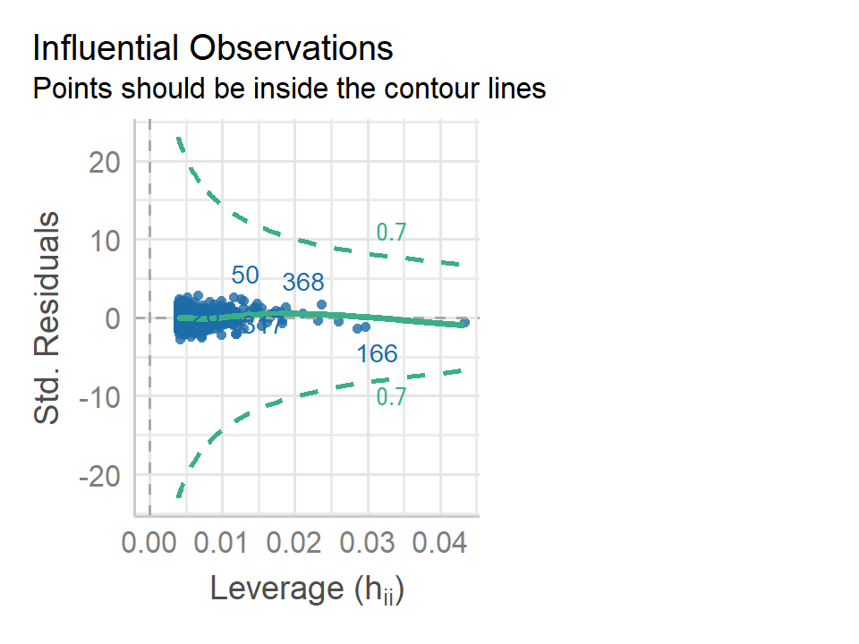
No evidence of outliers or high leverage points.
13. Simple linear regression to simulated data
set.seed(1)- Generate 100 observations from \(N(0,1)\).
x <- rnorm(100, 0, 1)- Generate 100 observations from \(N(0, 0.25)\).
eps <- rnorm(100, 0, 0.25)- Generate \(Y = -1 + 0.5 X + \epsilon\)
y <- -1 + 0.5 * x + eps
length(y)## [1] 100\(\beta_0\) = -1, and \(\beta_1\) = 0.5.
- Scatterplot between
xandy.
d <- tibble(x, y)
p <- ggplot(d) +
geom_point(aes(x, y))
p - Fit the simple linear regression and compare estimates to simulation parameters.
lm_y_x <- lm(y ~ x, data = d)
tidy_custom(lm_y_x) %>% gt()| term | coefficient | std.error | t-statistic | p-value |
|---|---|---|---|---|
| (Intercept) | -1.009 | 0.0242 | -41.63 | <0.001 |
| x | 0.500 | 0.0269 | 18.56 | <0.001 |
\(\hat{\beta_0}\) and \(\hat{\beta_1}\) are very close (essentially equal) to the simulation values.
- Plot the least squares and population regression lines.
d_lines <-
tribble(
~line, ~slope, ~intercept,
"Population", 0.5, -1,
"Least squares", coef(lm_y_x)[2], coef(lm_y_x)[1]
)
p +
geom_abline(
data = d_lines,
aes(slope = slope, intercept = intercept, color = line),
size = 1.5, alpha = 0.5
) +
labs(color = NULL) +
theme(legend.position = "top")
Exactly on top of each other.
- Fit a polynomial regression using \(x^2\).
lm_y_x2 <- lm(y ~ x + I(x^2), data = d)
anova(lm_y_x, lm_y_x2)## Analysis of Variance Table
##
## Model 1: y ~ x
## Model 2: y ~ x + I(x^2)
## Res.Df RSS Df Sum of Sq F Pr(>F)
## 1 98 5.6772
## 2 97 5.5643 1 0.11291 1.9682 0.1638By an \(F\)-test, the \(x^2\) term did not improve the model fit. We can also look at \(R^2\):
c(summary(lm_y_x)$r.squared, summary(lm_y_x2)$r.squared)## [1] 0.7784361 0.7828424- Repeat with less noise.
d_less <- tibble(
x, y = -1 + 0.5 * x + rnorm(100, 0, 0.1)
)
lm_y_x_less <- lm(y ~ x, data = d_less)
p <- ggplot(d_less) + geom_point(aes(x, y))
pd_lines <-
tribble(
~line, ~slope, ~intercept,
"Population", 0.5, -1,
"Least squares", coef(lm_y_x_less)[2], coef(lm_y_x_less)[1]
)
p +
geom_abline(
data = d_lines,
aes(slope = slope, intercept = intercept, color = line),
size = 1.5, alpha = 0.5
) +
labs(color = NULL) +
theme(legend.position = "top")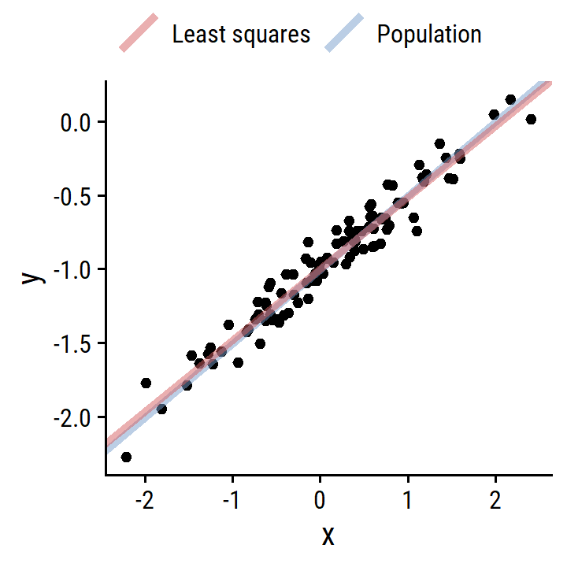
- Repeat with more noise.
d_more <- tibble(
x, y = -1 + 0.5*x + rnorm(100, 0, 0.5)
)
lm_y_x_more <- lm(y ~ x, data = d_more)
p <- ggplot(d_more) + geom_point(aes(x, y))
pd_lines <-
tribble(
~line, ~slope, ~intercept,
"Population", 0.5, -1,
"Least squares", coef(lm_y_x_more)[2], coef(lm_y_x_more)[1]
)
p +
geom_abline(
data = d_lines,
aes(slope = slope, intercept = intercept, color = line),
size = 1.5, alpha = 0.5
) +
labs(color = NULL) +
theme(legend.position = "top")- What are the confidence intervals of the coefficients for the different data?
bind_rows(
bind_cols(data = "original", tidy(lm_y_x, conf.int = 0.95)),
bind_cols(data = "less", tidy(lm_y_x_less, conf.int = 0.95)),
bind_cols(data = "more", tidy(lm_y_x_more, conf.int = 0.95))
) %>%
transmute(
data, term,
across(c(estimate, conf.low, conf.high), round, 3)
) %>%
group_by(data) %>%
gt(rowname_col = "term")| estimate | conf.low | conf.high | |
|---|---|---|---|
| original | |||
| (Intercept) | -1.009 | -1.058 | -0.961 |
| x | 0.500 | 0.446 | 0.553 |
| less | |||
| (Intercept) | -0.991 | -1.012 | -0.970 |
| x | 0.483 | 0.459 | 0.506 |
| more | |||
| (Intercept) | -1.023 | -1.118 | -0.927 |
| x | 0.549 | 0.443 | 0.656 |
14. Collineratiy simulation
- Simulate.
set.seed(1)
d <- tibble(
x1 = runif(100), x2 = 0.5 * x1 + rnorm(100) / 10,
y = 2 + 2 * x1 + 0.3 * x2 + rnorm(100)
)\[ Y = \beta_0 + \beta_1 X_1 + \beta_2 X_2 + \epsilon \]
\(\beta_0\) = 2, \(\beta_1\) = 2, and \(\beta_2\) = 0.3.
- Correlation between \(X_1\) and \(X_2\).
cor(d)## x1 x2 y
## x1 1.0000000 0.8351212 0.4498446
## x2 0.8351212 1.0000000 0.4199171
## y 0.4498446 0.4199171 1.0000000Unsurprisingly very high, \(r\) = 0.835.
- Fit the regression model.
lm_y_x1_x2 <- linear_reg() %>%
fit(y ~ x1 + x2, data = d)
tidy_custom(lm_y_x1_x2) %>% gt()| term | coefficient | std.error | t-statistic | p-value |
|---|---|---|---|---|
| (Intercept) | 2.13 | 0.2319 | 9.19 | <0.001 |
| x1 | 1.44 | 0.7212 | 2.00 | 0.049 |
| x2 | 1.01 | 1.1337 | 0.89 | 0.375 |
We can reject the null that \(\beta_2 = 0\), but not for \(\beta_1\). The estimates are nowhere close to the true values.
- Fit the model of \(Y\) and \(X_1\).
lm_y_x1 <- linear_reg() %>%
fit(y ~ x1, data = d)
tidy_custom(lm_y_x1) %>% gt()| term | coefficient | std.error | t-statistic | p-value |
|---|---|---|---|---|
| (Intercept) | 2.112 | 0.2307 | 9.15 | <0.001 |
| x1 | 1.976 | 0.3963 | 4.99 | <0.001 |
We recover the approximate true parameter, and reject the null.
- Fit the model of \(Y\) and \(X_2\).
lm_y_x2 <- linear_reg() %>%
fit(y ~ x2, data = d)
tidy_custom(lm_y_x2) %>% gt()| term | coefficient | std.error | t-statistic | p-value |
|---|---|---|---|---|
| (Intercept) | 2.39 | 0.1949 | 12.26 | <0.001 |
| x2 | 2.90 | 0.6330 | 4.58 | <0.001 |
We can reject the null, but don’t recover \(\beta_2 = 0.3\).
- Do the results contradict each other?
Yes, the models give much different results.
15. Univariable and multivariable regression on Boston
- Fit univariable models.
lm_crim_uni <-
tibble(
# Get a list of predictors
predictor = names(boston)[names(boston) != "crim"]
) %>%
mutate(
mod = map(
predictor,
~lm(as.formula(paste0("crim ~ ", .x)), data = boston)
),
mod_tidy = map(mod, broom::tidy)
)These associations were statistical significant at \(\alpha = 0.05\):
lm_crim_uni %>%
unnest(mod_tidy) %>%
filter(term != "(Intercept)", p.value < 0.05) %>%
transmute(
predictor, estimate = signif(estimate, 4),
p.value = scales::pvalue(p.value)
) %>%
gt()| predictor | estimate | p.value |
|---|---|---|
| zn | -0.07393 | <0.001 |
| indus | 0.50980 | <0.001 |
| nox | 31.25000 | <0.001 |
| rm | -2.68400 | <0.001 |
| age | 0.10780 | <0.001 |
| dis | -1.55100 | <0.001 |
| rad | 0.61790 | <0.001 |
| tax | 0.02974 | <0.001 |
| ptratio | 1.15200 | <0.001 |
| lstat | 0.54880 | <0.001 |
| medv | -0.36320 | <0.001 |
- Fit the multiple regression.
lm_crim_mult <- lm(crim ~ ., data = boston)tidy_custom(lm_crim_mult) %>%
gt()| term | coefficient | std.error | t-statistic | p-value |
|---|---|---|---|---|
| (Intercept) | 13.778 | 7.0818 | 1.95 | 0.052 |
| zn | 0.046 | 0.0188 | 2.43 | 0.015 |
| indus | -0.058 | 0.0836 | -0.70 | 0.486 |
| chas | -0.825 | 1.1834 | -0.70 | 0.486 |
| nox | -9.958 | 5.2898 | -1.88 | 0.060 |
| rm | 0.629 | 0.6071 | 1.04 | 0.301 |
| age | -0.001 | 0.0179 | -0.05 | 0.962 |
| dis | -1.012 | 0.2825 | -3.58 | <0.001 |
| rad | 0.612 | 0.0875 | 7.00 | <0.001 |
| tax | -0.004 | 0.0052 | -0.73 | 0.466 |
| ptratio | -0.304 | 0.1864 | -1.63 | 0.103 |
| lstat | 0.139 | 0.0757 | 1.83 | 0.067 |
| medv | -0.220 | 0.0598 | -3.68 | <0.001 |
We reject the null for these predictors: zn, dis, rad, medv
- Compare regression estimates.
lm_crim_estimates <-
lm_crim_uni %>%
unnest(mod_tidy) %>%
filter(term != "(Intercept)") %>%
transmute(
model = "univariable", term, estimate
) %>%
bind_rows(
tidy(lm_crim_mult) %>%
filter(term != "(Intercept)") %>%
transmute(
model = "multivariable", term, estimate
)
) %>%
pivot_wider(names_from = model, values_from = estimate)
lm_crim_estimates %>%
ggplot(aes(x = univariable, y = multivariable)) +
geom_point(size = 2) +
geom_abline(slope = 1, intercept = 0)One really bad outlier:
lm_crim_estimates %>% filter(univariable > 20)## # A tibble: 1 x 3
## term univariable multivariable
## <chr> <dbl> <dbl>
## 1 nox 31.2 -9.96Exclude that term and label the points:
lm_crim_estimates %>%
filter(univariable < 20) %>%
ggplot(aes(x = univariable, y = multivariable)) +
geom_point(size = 2) +
ggrepel::geom_text_repel(aes(label = term)) +
geom_abline(slope = 1, intercept = 0)- Is there evidence of non-linear association for any predictors?
lm_crim_uni_poly <-
tibble(
predictor = names(boston)[names(boston) != "crim"]
) %>%
mutate(
mod = map(
predictor,
~lm(as.formula(paste0("crim ~ poly(", .x, ", 3)")), data = boston)
),
mod_tidy = map(mod, broom::tidy)
)## Error in `mutate()`:
## ! Problem while computing `mod = map(...)`.
## Caused by error in `poly()`:
## ! 'degree' must be less than number of unique pointsOne of these models returned an error because the predictor does not have enough unique points to use polynomial regression.
Look at the number of unique values for each variable in boston:
boston %>%
pivot_longer(everything()) %>%
group_by(name) %>%
summarise(n_unique_vals = n_distinct(value), .groups = "drop") %>%
arrange(n_unique_vals)## # A tibble: 13 x 2
## name n_unique_vals
## <chr> <int>
## 1 chas 2
## 2 rad 9
## 3 zn 26
## 4 ptratio 46
## 5 tax 66
## 6 indus 76
## 7 nox 81
## 8 medv 229
## 9 age 356
## 10 dis 412
## 11 rm 446
## 12 lstat 455
## 13 crim 504The chas variable is a dummy variable to indicate the Charles River.
Exclude it and fit again:
lm_crim_uni_poly <-
tibble(
predictor = names(boston)[names(boston) != "crim"]
) %>%
filter(predictor != "chas") %>%
mutate(
mod = map(
predictor,
~lm(as.formula(paste0("crim ~ poly(", .x, ", 3)")), data = boston)
),
mod_tidy = map(mod, broom::tidy)
)These predictors have significant polynomial terms:
lm_crim_uni_poly %>%
unnest(mod_tidy) %>%
filter(str_detect(term, "poly")) %>%
group_by(predictor) %>%
filter(sum(p.value < 0.05) > 1) %>%
transmute(
predictor, term,
estimate = signif(estimate, 4), std.error = signif(std.error, 4),
p.value = scales::pvalue(p.value)
) %>%
gt(rowname_col = "term")| estimate | std.error | p.value | |
|---|---|---|---|
| zn | |||
| poly(zn, 3)1 | -38.750 | 8.372 | <0.001 |
| poly(zn, 3)2 | 23.940 | 8.372 | 0.004 |
| poly(zn, 3)3 | -10.070 | 8.372 | 0.230 |
| indus | |||
| poly(indus, 3)1 | 78.590 | 7.423 | <0.001 |
| poly(indus, 3)2 | -24.390 | 7.423 | 0.001 |
| poly(indus, 3)3 | -54.130 | 7.423 | <0.001 |
| nox | |||
| poly(nox, 3)1 | 81.370 | 7.234 | <0.001 |
| poly(nox, 3)2 | -28.830 | 7.234 | <0.001 |
| poly(nox, 3)3 | -60.360 | 7.234 | <0.001 |
| rm | |||
| poly(rm, 3)1 | -42.380 | 8.330 | <0.001 |
| poly(rm, 3)2 | 26.580 | 8.330 | 0.002 |
| poly(rm, 3)3 | -5.510 | 8.330 | 0.509 |
| age | |||
| poly(age, 3)1 | 68.180 | 7.840 | <0.001 |
| poly(age, 3)2 | 37.480 | 7.840 | <0.001 |
| poly(age, 3)3 | 21.350 | 7.840 | 0.007 |
| dis | |||
| poly(dis, 3)1 | -73.390 | 7.331 | <0.001 |
| poly(dis, 3)2 | 56.370 | 7.331 | <0.001 |
| poly(dis, 3)3 | -42.620 | 7.331 | <0.001 |
| rad | |||
| poly(rad, 3)1 | 120.900 | 6.682 | <0.001 |
| poly(rad, 3)2 | 17.490 | 6.682 | 0.009 |
| poly(rad, 3)3 | 4.698 | 6.682 | 0.482 |
| tax | |||
| poly(tax, 3)1 | 112.600 | 6.854 | <0.001 |
| poly(tax, 3)2 | 32.090 | 6.854 | <0.001 |
| poly(tax, 3)3 | -7.997 | 6.854 | 0.244 |
| ptratio | |||
| poly(ptratio, 3)1 | 56.050 | 8.122 | <0.001 |
| poly(ptratio, 3)2 | 24.770 | 8.122 | 0.002 |
| poly(ptratio, 3)3 | -22.280 | 8.122 | 0.006 |
| lstat | |||
| poly(lstat, 3)1 | 88.070 | 7.629 | <0.001 |
| poly(lstat, 3)2 | 15.890 | 7.629 | 0.038 |
| poly(lstat, 3)3 | -11.570 | 7.629 | 0.130 |
| medv | |||
| poly(medv, 3)1 | -75.060 | 6.569 | <0.001 |
| poly(medv, 3)2 | 88.090 | 6.569 | <0.001 |
| poly(medv, 3)3 | -48.030 | 6.569 | <0.001 |
Reproducibility
Reproducibility receipt
Sys.time()## [1] "2022-04-13 22:16:24 AST"if ("git2r" %in% installed.packages()) {
if (git2r::in_repository()) {
git2r::repository()
}
}## Local: main C:/Users/tdunn/Documents/learning/islr-tidy
## Remote: main @ origin (https://github.com/taylordunn/islr-tidy)
## Head: [bda4b37] 2022-04-13: Started chapter 7sessioninfo::session_info()## - Session info ---------------------------------------------------------------
## setting value
## version R version 4.1.3 (2022-03-10)
## os Windows 10 x64
## system x86_64, mingw32
## ui RTerm
## language (EN)
## collate English_Canada.1252
## ctype English_Canada.1252
## tz America/Curacao
## date 2022-04-13
##
## - Packages -------------------------------------------------------------------
## package * version date lib source
## abind 1.4-5 2016-07-21 [1] CRAN (R 4.1.1)
## assertthat 0.2.1 2019-03-21 [1] CRAN (R 4.1.0)
## backports 1.2.1 2020-12-09 [1] CRAN (R 4.1.0)
## bayestestR 0.10.5 2021-07-26 [1] CRAN (R 4.1.0)
## bit 4.0.4 2020-08-04 [1] CRAN (R 4.1.2)
## bit64 4.0.5 2020-08-30 [1] CRAN (R 4.1.2)
## bookdown 0.24 2021-09-02 [1] CRAN (R 4.1.1)
## broom * 0.7.10 2021-10-31 [1] CRAN (R 4.1.2)
## bslib 0.2.5.1 2021-05-18 [1] CRAN (R 4.1.0)
## cachem 1.0.6 2021-08-19 [1] CRAN (R 4.1.1)
## car 3.0-12 2021-11-06 [1] CRAN (R 4.1.2)
## carData 3.0-4 2020-05-22 [1] CRAN (R 4.1.1)
## cellranger 1.1.0 2016-07-27 [1] CRAN (R 4.1.0)
## checkmate 2.0.0 2020-02-06 [1] CRAN (R 4.1.0)
## class 7.3-20 2022-01-16 [2] CRAN (R 4.1.3)
## cli 3.2.0 2022-02-14 [1] CRAN (R 4.1.3)
## coda 0.19-4 2020-09-30 [1] CRAN (R 4.1.0)
## codetools 0.2-18 2020-11-04 [2] CRAN (R 4.1.3)
## colorspace 2.0-3 2022-02-21 [1] CRAN (R 4.1.3)
## corrr * 0.4.3 2020-11-24 [1] CRAN (R 4.1.0)
## crayon 1.5.1 2022-03-26 [1] CRAN (R 4.1.3)
## datawizard 0.1.0 2021-06-18 [1] CRAN (R 4.1.0)
## DBI 1.1.2 2021-12-20 [1] CRAN (R 4.1.2)
## dbplyr 2.1.1 2021-04-06 [1] CRAN (R 4.1.0)
## DEoptimR 1.0-9 2021-05-24 [1] CRAN (R 4.1.0)
## dials * 0.0.10 2021-09-10 [1] CRAN (R 4.1.1)
## DiceDesign 1.9 2021-02-13 [1] CRAN (R 4.1.0)
## digest 0.6.29 2021-12-01 [1] CRAN (R 4.1.2)
## distill 1.3 2021-10-13 [1] CRAN (R 4.1.2)
## downlit 0.4.0 2021-10-29 [1] CRAN (R 4.1.1)
## dplyr * 1.0.8 2022-02-08 [1] CRAN (R 4.1.3)
## dunnr * 0.2.5 2022-01-15 [1] Github (taylordunn/dunnr@c83b30e)
## effectsize 0.4.5 2021-05-25 [1] CRAN (R 4.1.0)
## ellipsis 0.3.2 2021-04-29 [1] CRAN (R 4.1.0)
## emmeans 1.7.0 2021-09-29 [1] CRAN (R 4.1.2)
## equatiomatic 0.2.0 2021-01-30 [1] CRAN (R 4.1.0)
## estimability 1.3 2018-02-11 [1] CRAN (R 4.1.1)
## evaluate 0.14 2019-05-28 [1] CRAN (R 4.1.0)
## extrafont 0.17 2014-12-08 [1] CRAN (R 4.1.0)
## extrafontdb 1.0 2012-06-11 [1] CRAN (R 4.1.0)
## fansi 1.0.3 2022-03-24 [1] CRAN (R 4.1.3)
## farver 2.1.0 2021-02-28 [1] CRAN (R 4.1.0)
## fastmap 1.1.0 2021-01-25 [1] CRAN (R 4.1.0)
## forcats * 0.5.1 2021-01-27 [1] CRAN (R 4.1.0)
## foreach 1.5.2 2022-02-02 [1] CRAN (R 4.1.3)
## fs 1.5.2 2021-12-08 [1] CRAN (R 4.1.2)
## furrr 0.2.3 2021-06-25 [1] CRAN (R 4.1.2)
## future 1.24.0 2022-02-19 [1] CRAN (R 4.1.3)
## future.apply 1.8.1 2021-08-10 [1] CRAN (R 4.1.3)
## generics 0.1.2 2022-01-31 [1] CRAN (R 4.1.3)
## GGally 2.1.2 2021-06-21 [1] CRAN (R 4.1.0)
## ggplot2 * 3.3.5 2021-06-25 [1] CRAN (R 4.1.0)
## ggrepel 0.9.1 2021-01-15 [1] CRAN (R 4.1.0)
## ggridges 0.5.3 2021-01-08 [1] CRAN (R 4.1.0)
## git2r 0.28.0 2021-01-10 [1] CRAN (R 4.1.0)
## globals 0.14.0 2020-11-22 [1] CRAN (R 4.1.0)
## glue 1.6.2 2022-02-24 [1] CRAN (R 4.1.3)
## gower 0.2.2 2020-06-23 [1] CRAN (R 4.1.0)
## GPfit 1.0-8 2019-02-08 [1] CRAN (R 4.1.0)
## gridExtra 2.3 2017-09-09 [1] CRAN (R 4.1.0)
## gt * 0.3.1 2021-08-07 [1] CRAN (R 4.1.2)
## gtable 0.3.0 2019-03-25 [1] CRAN (R 4.1.0)
## hardhat 0.2.0 2022-01-24 [1] CRAN (R 4.1.3)
## haven 2.4.1 2021-04-23 [1] CRAN (R 4.1.0)
## here * 1.0.1 2020-12-13 [1] CRAN (R 4.1.0)
## highr 0.9 2021-04-16 [1] CRAN (R 4.1.0)
## hms 1.1.1 2021-09-26 [1] CRAN (R 4.1.2)
## htmltools 0.5.2 2021-08-25 [1] CRAN (R 4.1.1)
## httr 1.4.2 2020-07-20 [1] CRAN (R 4.1.0)
## infer * 1.0.0 2021-08-13 [1] CRAN (R 4.1.1)
## insight 0.14.2 2021-06-22 [1] CRAN (R 4.1.0)
## ipred 0.9-12 2021-09-15 [1] CRAN (R 4.1.1)
## ISLR2 * 1.3-1 2022-01-10 [1] CRAN (R 4.1.2)
## iterators 1.0.14 2022-02-05 [1] CRAN (R 4.1.3)
## jquerylib 0.1.4 2021-04-26 [1] CRAN (R 4.1.0)
## jsonlite 1.7.3 2022-01-17 [1] CRAN (R 4.1.2)
## knitr 1.37 2021-12-16 [1] CRAN (R 4.1.2)
## labeling 0.4.2 2020-10-20 [1] CRAN (R 4.1.0)
## lattice 0.20-45 2021-09-22 [2] CRAN (R 4.1.3)
## lava 1.6.10 2021-09-02 [1] CRAN (R 4.1.3)
## lhs 1.1.1 2020-10-05 [1] CRAN (R 4.1.0)
## lifecycle 1.0.1 2021-09-24 [1] CRAN (R 4.1.1)
## listenv 0.8.0 2019-12-05 [1] CRAN (R 4.1.0)
## lubridate 1.8.0 2021-10-07 [1] CRAN (R 4.1.1)
## magrittr 2.0.2 2022-01-26 [1] CRAN (R 4.1.3)
## MASS 7.3-55 2022-01-16 [2] CRAN (R 4.1.3)
## Matrix 1.4-0 2021-12-08 [2] CRAN (R 4.1.3)
## memoise 2.0.1 2021-11-26 [1] CRAN (R 4.1.2)
## mgcv 1.8-39 2022-02-24 [2] CRAN (R 4.1.3)
## modeldata * 0.1.1 2021-07-14 [1] CRAN (R 4.1.0)
## modelr 0.1.8 2020-05-19 [1] CRAN (R 4.1.0)
## munsell 0.5.0 2018-06-12 [1] CRAN (R 4.1.0)
## mvtnorm 1.1-3 2021-10-08 [1] CRAN (R 4.1.1)
## nlme 3.1-155 2022-01-16 [2] CRAN (R 4.1.3)
## nnet 7.3-17 2022-01-16 [2] CRAN (R 4.1.3)
## parallelly 1.30.0 2021-12-17 [1] CRAN (R 4.1.2)
## parameters 0.14.0 2021-05-29 [1] CRAN (R 4.1.0)
## parsnip * 0.1.7 2021-07-21 [1] CRAN (R 4.1.0)
## patchwork * 1.1.1 2020-12-17 [1] CRAN (R 4.1.0)
## performance 0.7.3 2021-07-21 [1] CRAN (R 4.1.1)
## pillar 1.7.0 2022-02-01 [1] CRAN (R 4.1.2)
## pkgconfig 2.0.3 2019-09-22 [1] CRAN (R 4.1.0)
## plyr 1.8.7 2022-03-24 [1] CRAN (R 4.1.3)
## pROC 1.17.0.1 2021-01-13 [1] CRAN (R 4.1.0)
## prodlim 2019.11.13 2019-11-17 [1] CRAN (R 4.1.0)
## purrr * 0.3.4 2020-04-17 [1] CRAN (R 4.1.2)
## qqplotr 0.0.5 2021-04-23 [1] CRAN (R 4.1.0)
## R6 2.5.1 2021-08-19 [1] CRAN (R 4.1.1)
## RColorBrewer 1.1-3 2022-04-03 [1] CRAN (R 4.1.3)
## Rcpp 1.0.8.3 2022-03-17 [1] CRAN (R 4.1.3)
## readr * 2.1.1 2021-11-30 [1] CRAN (R 4.1.2)
## readxl 1.3.1 2019-03-13 [1] CRAN (R 4.1.0)
## recipes * 0.1.17 2021-09-27 [1] CRAN (R 4.1.1)
## reprex 2.0.0 2021-04-02 [1] CRAN (R 4.1.0)
## reshape 0.8.8 2018-10-23 [1] CRAN (R 4.1.0)
## rlang 1.0.2 2022-03-04 [1] CRAN (R 4.1.3)
## rmarkdown 2.11 2021-09-14 [1] CRAN (R 4.1.1)
## robustbase 0.93-8 2021-06-02 [1] CRAN (R 4.1.0)
## rpart 4.1.16 2022-01-24 [2] CRAN (R 4.1.3)
## rprojroot 2.0.2 2020-11-15 [1] CRAN (R 4.1.0)
## rsample * 0.1.0 2021-05-08 [1] CRAN (R 4.1.0)
## rstudioapi 0.13 2020-11-12 [1] CRAN (R 4.1.0)
## Rttf2pt1 1.3.8 2020-01-10 [1] CRAN (R 4.1.1)
## rvest 1.0.0 2021-03-09 [1] CRAN (R 4.1.0)
## sass 0.4.0 2021-05-12 [1] CRAN (R 4.1.0)
## scales * 1.1.1 2020-05-11 [1] CRAN (R 4.1.0)
## see 0.6.4 2021-05-29 [1] CRAN (R 4.1.0)
## sessioninfo 1.1.1 2018-11-05 [1] CRAN (R 4.1.0)
## stringi 1.7.6 2021-11-29 [1] CRAN (R 4.1.2)
## stringr * 1.4.0 2019-02-10 [1] CRAN (R 4.1.0)
## survival 3.2-13 2021-08-24 [2] CRAN (R 4.1.3)
## tibble * 3.1.6 2021-11-07 [1] CRAN (R 4.1.1)
## tidymodels * 0.1.4 2021-10-01 [1] CRAN (R 4.1.1)
## tidyr * 1.2.0 2022-02-01 [1] CRAN (R 4.1.3)
## tidyselect 1.1.2 2022-02-21 [1] CRAN (R 4.1.3)
## tidyverse * 1.3.1 2021-04-15 [1] CRAN (R 4.1.3)
## timeDate 3043.102 2018-02-21 [1] CRAN (R 4.1.0)
## tune * 0.1.6 2021-07-21 [1] CRAN (R 4.1.0)
## tzdb 0.2.0 2021-10-27 [1] CRAN (R 4.1.2)
## usethis 2.1.5 2021-12-09 [1] CRAN (R 4.1.2)
## utf8 1.2.2 2021-07-24 [1] CRAN (R 4.1.0)
## vctrs 0.3.8 2021-04-29 [1] CRAN (R 4.1.3)
## vroom 1.5.7 2021-11-30 [1] CRAN (R 4.1.2)
## withr 2.5.0 2022-03-03 [1] CRAN (R 4.1.3)
## workflows * 0.2.3 2021-07-16 [1] CRAN (R 4.1.0)
## workflowsets * 0.1.0 2021-07-22 [1] CRAN (R 4.1.0)
## xfun 0.29 2021-12-14 [1] CRAN (R 4.1.2)
## xml2 1.3.3 2021-11-30 [1] CRAN (R 4.1.2)
## xtable 1.8-4 2019-04-21 [1] CRAN (R 4.1.0)
## yaml 2.2.1 2020-02-01 [1] CRAN (R 4.1.0)
## yardstick * 0.0.8 2021-03-28 [1] CRAN (R 4.1.0)
##
## [1] C:/Users/tdunn/Documents/R/win-library/4.1
## [2] C:/Program Files/R/R-4.1.3/library